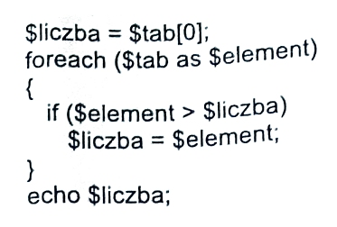
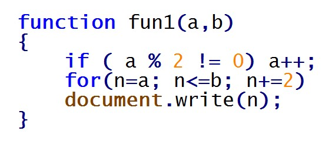
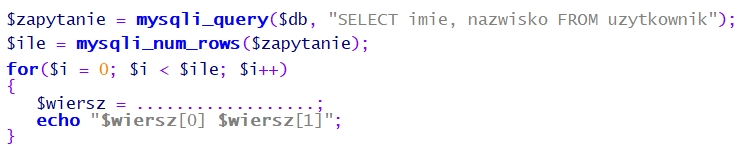

Baza wszystkich pytań E.14
1. Którego polecenia nalezy użyć, aby wyraz TEKST został wyświetleny w kolorze czarnym w oknie przeglądarki internetowej?
A. <body color="black">TEKST</font>
B. <font color="czarny">TEKST</font>
C. <font color="#000000">TEKST</font>
D. <body bgcolor="black">TEKST</body>
2. W poleceniach, których celem jest odtwarzanie na stronie internetowej dźwięku jako podkładu muzycznego NIE wykorzystuje się atrybutu
A. loop="10"
B. balance="-10"
C. volume="-100"
D. href="C:/100.wav">
3. Jakiego znacznika należy użyć, aby przejść do kolejnej linii tekstu, nie tworząc akapitu na stronie interenetowej ?
A. <p>
B. </b>
C. <br>
D. </br>
4. Kaskadowe arkusze stylów tworzy się w celu
A. ułatwienia formatowania strony
B. nadpisywania wartości znaczników już ustawionych na stronie
C. połączenia struktury dokumentu strony z właściwą formą jego prezentacji
D. blokowania jakichkolwiek zmian w wartościach znaczników już przypisanych w pliku CSS
5. W podanej regule CSS: h1 {color: blue} h1 oznacza
A. klasę
B. wartość
C. selektor
D. deklarację
6. Edytor spełniający założenia WYSIWYG musi umożliwiać
A. tworzenie podstawowej grafiki wektorowej
B. publikację strony na serwerze poprzez wbudowanego klienta FTP
C. obróbkę plików dźwiękowych przed umieszczeniem ich na stronie internetowej
D. uzyskanie zbliżonego wyniku tworzenej strony do jej obrazu w przegladarce interenetowej
7. Do graficznego tworzenia stron internetowych należy wykorzystać.
A. edytor CSS
B. przeglądarkę internetową
C. program typu WYSIWYG
D. program MS Office Picture Manager
8. W procesie walidacji stron internetowych nie bada się
A. działania linków
B. błędów składni kodu
C. zgodności z przeglądarkami
D. źródła pochodzenia narzędzi edytorskich
9. Model opisu przestrzeni barw o parametrach: odcień, nasycenie i jasność, to
A. HSV
B. RGB
C. CMY
D. CMYK
10. Wskaż model barw, który stosuje się do wyświetlania kolorów na ekranie monitora komputerowego
A. HLS
B. RGB
C. CMY
D. CMYK
11. Który parametr obiektu graficznego ulegnie zmianie po modyfikacji wartości kanału alfa?
A. Nasycenie barw
B. Przezroczystość
C. Ostrość krawędzi
D. Kolejność wyświetlenia pikseli
12. Jakiego formatu należy użyć do zapisu obrazu z kompresją stratną?
A. GIF
B. PNG
C. PCX
D. JPEG
13. Najprostszy sposób zamiany obiektu oznaczonego cyfrą 1 na obiekt oznaczony cyfrą 2 polega na

A. animowaniu obiektu
B. zmianie warstwy obiektu
C. narysowaniu docelowego obiektu
D. geometrycznym transformowaniu obiektu
14. Jak nazywa się proces przedstawienia, we właściwej dla danego środowiska formie, informacji zawartej w dokumencie elektronicznym?
A. Mapowanie
B. Rasteryzacja
C. Renderowanie
D. Teksturowanie
15. Proces filtracji sygnału wejściowego w dziedzinie czasu, obejmujący zasadę superpozycji, związany jest filtrem
A. liniowym
B. przyczynowym
C. niezmiennym w czasie
D. o skończonej odpowiedzi impulsowej
16. Jak nazywa się podzbiór strukturalnego języka zapytań, związany z formułowaniem zapytań do bazy danych za pomocą polecenia SELECT?
A. SQL DML (ang. Data Manipulation Language)
B. SQL DDL (ang. Data Definition Language)
C. SQL DCL (ang. Data Control Language)
D. SQL DQL (ang. Data Query Language)
17. Jakie sa nazwy typowych poleceń języka zapytań SQL, związane z wykonywaniem operacji na danych SQL DML (np.: umieszczanie danych w bazie, kasowanie dokonywanie zmian w danych)?
A. SELECT, SELECT INTO
B. ALTER, CREATE, DROP
C. DENY, GRANT, REVOKE
D. DELETE, INSERT, UPDATE
18. Jak posortowana będzie lista, utworzona ze wszystkich kolumn tabeli uczniowie i zawierająca uczniów ze średnią większą od 5, która zostanie zwrócona jako wynik przedstawionego zapytania?

A. Rosnąca według parametru klasa
B. Malejąco według parametru klasa
C. Rosnaco według parametru srednia
D. Malejąco według parametru srednia
19. Według którego parametru oraz dla ilu tabel zostaną zwrócone wiersze na liście w wyniku przedstawionego zapytania?
A. Według parametru wyrob_id wyłącznie dla trzech tabel
B. Według parametru wyrob_id dla wyłącznie dla trzech tabel
C. Według parametru nr_id wyłącznie dla trzech tabel
D. Według parametru nr_id dla wszystkich tabel
20. Który z obiektów relacyjnej bazy danych, będący kodem języka SQL, może być wywoływany w zapytaniach modyfikujących kolumny danych widoczne jako tabela, bez względu na to czy jest tworzony programowo, czy dynamicznie?
A. Reguła
B. Wyzwalacz
C. Procedura składowa
D. Funkcja zdefiniowana
21. Jak nazywa się element bazy danych, za pomocą którego można jedynie odczytać dane z bazy, prezentując je w postaci tekstu lub wykresu?
A. Tabela
B. Raport
C. Zapytanie
D. Formularz
22. Jakiego typu specjalizowane oprogramowanie narzędziowe należy zainstalować, aby umożliwić wykonywanie jego użytkownikowi operacji na zgromadzonych danych?
A. Klucz obcy
B. System Zarządzania Bazą Danych (SZBD)
C. Obiektowy System Zarządzania Bazą Danych
D. Otwarty mechanizm komunikacji bazy danych
23. Co należy zastosować w organizacji danych, aby zapytania w bazie danych były wykonywane szybciej?
A. Reguły
B. Indeksy
C. Wartości domyślne
D. Klucze podstawowe
24. W programie Microsoft Access formą zabezpieczeń dostępu do danych związaną z tabelą i kwerendą jest
A. stosowanie makr
B. przypisanie uprawnień
C. określanie przestrzeni tabel
D. wprowadzenie limitów przestrzeni dyskowej
25. Które z wymienionych osób odpowiadają za przygotowanie systemu bazy danych do pracy produkcyjnej w sposób ciągły, zarządzanie użytkownikami i instalowanie nowych wersji systemu bazodanowego?
A. Projektanci narzędzi deweloperskich
B. Administratorzy systemu bazy danych
C. Administratorzy serwerów i sieci komputerowych
D. Projektanci i programiści Systemu Zarządzania Bazą Danych.
26. Z jakimi mechanizmami nadawania zabezpieczeń, dającymi możliwości wykonywania operacji na bazie danych, związane są zagadnienia zarządzania kontami, użytkownikami i uprawnieniami?
A. Z regułami
B. Z atrybutami
C. Z przywilejami obiektowymi
D. Z przywilejami systemowymi
27. Metoda udostępniania bazy danych w programie Microsoft Access, dotycząca wszystkich obiektów bazy umieszczonych na dysku sieciowym i używanych jednocześnie przez różne osoby nosi nazwę
A. folderu sieciowego
B. serwera bazy danych
C. dzielonej bazy danych
D. witryny programu SharePoint
28. Jakie należy posiadać uprawnienia, aby wykonać i odtworzyć kopię zapasową bazy danych Microsoft SQL Server 2005 Express?
A. Users
B. Security users
C. Użytkownik lokalny
D. Administrator systemu
29. Typ zmiennej w języku JavaScript
A. nie występuje
B. jest tylko jeden
C. następuje poprzez przypisanie wartości
D. musi być zadeklarowany na początku skryptu
30. Zmienne typu int odnoszą się do liczb
A. naturalnych
B. całkowitych
C. w notacji stałoprzecinkowej
D. w notacji zmiennoprzecinkowej
31. Co definiuje w języku C++ przedstawiony fragment kodu?

A. Hierarchię zmiennych
B. Trzy zmienne niepowiązane ze sobą
C. Typ strukturalny składający się z trzech pól
D. Kontakt pomiędzy zmiennymi globalnymi i lokalnymi
32. Sposób programowania, w którym ciąg poleceń (sekwencji instrukcji) przekazywanych komputerowi jest postrzegany jako program, nosi nazwę programowania
A. stanowego
B. logicznego
C. funkcyjnego
D. imperatywnego
33. Które wartości będą kolejno wypisane w wyniku działania przedstawionego skryptu
A. 2 2 1
B. 2 1 1
C. 1 2 1
D. 1 2 2
34. Fragment kodu prezentuje składnię języka

A. C
B. C#
C. PHP
D. JavaScript
35. Jaki program komputerowy przekształca kod źródłowy, napisany w konkretnym języku programowania, na język komputera?
A. Debugger
B. Kompilator
C. Edytor kodu źródłowego
D. Środowisko programistyczne
36. Jak nazywa się program, który wykonuje instrukcje zawarte w kodzie źródłowym tworzonego programu bez uprzedniego generowania programu wynikowego?
A. Interpreter
B. Kompilator
C. Konwerter kodu
D. Konwerter języka
37. Który język skryptowy ogólnego przeznaczenia należy wykorzystać do tworzenia aplikacji WWW, zagnieżdżanych w języku HTML i uruchamianych po stronie serwera?
A. C#
B. Perl
C. PHP
D. JavaScript
38. Jak nazywa się technika umożliwiająca otwarcie połączenia klienta z serwerem i komunikację bez przeładowywania całej strony WWW w sposób asynchroniczny ?
A. PHP
B. XML
C. AJAX
D. VBScript
39. Jak nazywa się element oznaczony znakiem zapytania w strukturze platformy .NET, który umożliwia tworzenie własnych aplikacji z użyciem frameworków i zamianę kompilowanego kodu pośredniego na kod maszynowy procesora zainstalowanego w komputerze?

A. Infrastruktura językowa (CLI)
B. Biblioteka klas bazowych (BCL)
C. Wspólne środowisko programistyczne (CLP)
D. Wspólne środowisko uruchomieniowe (CLR)
40. Jakiego rodzaju mechanizm kontroli bezpieczeństwa wykonywania aplikacji zawiera środowisko uruchomieniowe platformy .NET Framework?
A. Mechanizm wykonywania aplikacji dla bibliotek klas
B. Mechanizm wykonywania aplikacji realizowany przez frameworki aplikacji internetowych (ASP.NET)
C. Mechanizm wykonywania aplikacji realizowany przez funkcję Windows API (Application Programming Interface)
D. Mechanizm wykonywania aplikacji oparty na uprawnieniach kodu (CAS - Code Access Security) i na rolach (RBS - Role-Based Security)
41. Co to jest DBMS?
A. Strukturalny język zapytań kierowanych do bazy danych
B. System zarządzania bazą danych
C. Obiektowy język programowania do generowania stron www
D. Kaskadowy arkusz stylów do opisu wyglądu strony www
42. Który z odsyłaczy posiada poprawną konstrukcję?
A. <a href='mailto:adres'> tekst </a>
B. <a href='http://adres'> tekst </a>
C. <a href="http://adres"> tekst <a>
D. <a href="mailto:adres"> tekst </a>
43. Fragment kodu napisany w języku HTML zamieszczony w ramce przedstawia listę

A. wypunktowaną
B. numerowaną
C. odnośników
D. skrótów
44. Polecenie colspan służy do łączenia komórek tabeli w poziomie, natomiast rowspan w pionie. Którą z tabel wyświetli fragment kodu napisany w języku HTML?
A. A
B. B
C. C
D. D
45. W znaczniku <head> (w części <meta ... >) strony www NIE umieszcza się informacji dotyczącej
A. autora
B. kodowania
C. typu dokumentu
D. automatycznego odświeżania
46. Wskaż sposób, w jaki należy odwołać się do pliku default.css, jeśli index.html znajduje się bezpośrednio w katalogu ?

A. <link rel="stylesheet" type="text/css" href="./style/default.css" />
B. <link rel="stylesheet" type="text/css" href="C:/style/default.css" />
C. <link rel="stylesheet" type="text/css" href="...styledefault.css" />
D. <link rel="stylesheet" type="text/css" href="c:style/default.css" />
47. Wskaż stwierdzenie, które jest prawdziwe dla następującej definicji stylu:
A. Jest to styl lokalny
B. Zdefiniowano dwie klasy
C. Akapit będzie transponowany na małe litery
D. Odnośnik będzie pisany czcionką 14 punktów
48. W palecie kolorów RGB kolor żółty jest połączeniem dwóch kolorów: zielonego i czerwonego. Który z kodów szesnastkowych oznacza kolor żółty?
A. #FF00FF
B. #00FFFF
C. #FFFF00
D. #F0F0F0
49. Który z formatów NIE pozwala na zapis plików animowanych?
A. GIF
B. ACE
C. SWF
D. SVG
50. Który z formatów graficznych pozwala na zapis przejrzystego tła?
A. GIF
B. RAW
C. BMP
D. JPEG
51. Proces walidacji strony internetowej to
A. zespół działań mających na celu zwiększenie oglądalności
B. sprawdzenie jej w celu wyeliminowania błędów
C. publikowanie w sieci
D. promocja strony
52. Które oprogramowanie NIE JEST systemem zarządzania treścią (CMS)?
A. Joomla
B. Apache
C. Mambo
D. WordPress
53. Który z formatów zapewnia największa redukcję rozmiaru pliku dźwiękowego?
A. WAV
B. PCM
C. MP3
D. CD-Audio
54. Wskaż prawidłową kolejność tworzenia bazy danych
A. Określenie celu, utworzenie relacji, stworzenie tabel, normalizacja
B. Określenie celu, normalizacja, utworzenie relacji, stworzenie tabel
C. Określenie celu, stworzenie tabel, utworzenie relacji, normalizacja
D. Określenie celu, normalizacja, stworzenie tabel, utworzenie relacji
55. Wskaż typ relacji pomiędzy tabelami: Tabela1 i Tabela3

A. Jeden do jednego
B. Wiele do jednego
C. Jeden do wielu
D. Wiele do wielu
56. Które z pól są umieszczone w formularzu?

A. Textarea, Option, Input(Chechbox), Input(Checkbox), Input(Submit) Input(Reset)
B. Input(Text), Select, Input(Radio), Input(Radio), Input(Submit), Input(Reset)
C. Textarea, Select, Input(Radio), Input(Radio), Input(Reset), Input(Submit)
D. Input(Text), Input(Chechbox), Select, Select, Input(Submit), Input(Reset)
57. Którą z właściwości pola tabeli należy zdefiniować, aby pole przyjmowało dane składające się wyłącznie z cyfr?
A. Tagi inteligentne
B. Wartość domyślną
C. Maskę wprowadzania
D. Regułę sprawdzania poprawności
58. Którego ze słów kluczowych języka SQL należy użyć, aby wyeliminować duplikaty?
A. LIKE
B. DISTINCT
C. ORDER BY
D. GROUP BY
59. Które ze stwierdzeń prawidłowo charakteryzuje zdefiniowaną tabelę: CREATE TABLE dane (kolumna INTEGER(3));
A. Tabela o nazwie posiada trzy kolumny liczb całkowitych
B. Tabela o nazwie posiada jedną kolumnę liczb całkowitych
C. Tabela posiada jedną kolumnę zawierającą trzy elementowe tablice
D. Kolumny tabeli nazywają się: , ,
60. Polecenie REVOKE SELECT ON nazwa1 FROM nazwa2 w języku SQL umożliwia
A. nadanie uprawnień z użyciem zdefiniowanego schematu
B. odbieranie uprawnień użytkownikowi
C. usuwanie użytkownika z bazy
D. nadawanie praw do tabeli
61. Które polecenie wydane z konsoli systemu operacyjnego, zawierające w swojej składni opcję --repair, umożliwia naprawę bazy danych?
A. mysqlcheck
B. mysqldump
C. truncate
D. create
62. Które polecenie wydane z konsoli systemowej dokona przywrócenia bazy danych?
A. mysqldump -u root -p baza > kopia.sql
B. mysqldump -u root -p baza < kopia.sql
C. mysql -u root -p baza < kopia.sql
D. mysql -u root -p baza > kopia.sql
63. Polecenie w języku SQL GRANT ALL PRIVILEGES ON klienci TO pracownik
A. nadaje uprawnienie grupie do tabeli
B. odbiera wszystkie uprawnienia do tabeli
C. skopiuje uprawnienia z grupy na użytkownika
D. nadaje wszystkie uprawnienia do tabeli użytkownikowi
64. Która z wymienionych funkcji sortowania wykorzystywana w języku PHP sortuje tablicę asocjacyjną według indeksów
A. sort()
B. rsort()
C. asort()
D. ksort()
65. W skrypcie PHP należy utworzyć cookie o nazwie które przyjmie wartość . Cookie ma być dostępne przez jedną godzinę od jego utworzenia. W tym celu należy w skrypcie PHP użyć funkcji:
A. cookie("owoce","jabłko",3600);
B. cookie("jabłko","owoce",3600);
C. setcookie("owoce","jabłko",time()+3600);
D. setcookie("jabłko","owoce",time()+3600);
66. Wskaż słowo kluczowe w języku C++ dodawane przed wbudowanym typem danych, które przesuwa zakres liczby wyłącznie nieujemne
A. long
B. const
C. short
D. unsigned
67. W językach programowania tylko zmienna jednego typu wbudowanego może przyjmować wyłącznie dwie wartości. Jest to typ
A. logiczny
B. znakowy
C. tablicowy
D. łańcuchowy
68. Instrukcja języka PHP tworząca obiekt dla zdefiniowanej w ramce klasy ma postać

A. pkt Punkt;
B. pkt = new Punkt();
C. pkt Punkt();
D. Punkt() pkt;
69. Wskaż wynik wykonania skryptu napisanego w języku PHP

A. A
B. B
C. C
D. D
70. Które ze stwierdzeń dotyczących języków programowania NIE jest prawdziwe
A. C++ jest językiem obiektowym
B. JavaScript jest językiem skryptowym
C. SQL jest językiem programowania strukturalnego
D. PHP jest językiem do tworzenia stron w czasie rzeczywistym
71. Jaka wartość zostanie wypisana na standardowym wyjściu dla zamieszczonego w ramce fragmentu programu napisanego w języku C++

A. 0
B. 2
C. 3
D. 32
72. Wskaż stwierdzenie, które nie jest prawdziwe dla następującej definicji funkcji w języku C++?

A. Funkcja zwraca wartość
B. Funkcja nie zwraca wartości
C. Funkcja posiada dwa parametry
D. Funkcja odwołuje się do parametrów przez referencję
73. Element zadeklarowany w języku C++ double *x; to
A. Parametr formalny typu rzeczywistego
B. Zmienna rzeczywista
C. Zmienna całkowita
D. Wskaźnik
74. Wskaż prawidłową kolejność tworzenia aplikacji
A. Specyfikacja wymagań, analiza wymagań klienta, tworzenie, wdrażanie,testy
B. Analiza wymagań klienta, specyfikacja wymagań tworzenie, testy, wdrażanie
C. Tworzenie, analiza wymagań klienta, specyfikacja wymagań, wdrażanie, testy
D. Analiza wymagań klienta, specyfikacja wymagań, tworzenie, wdrażanie, testy
75. Jaką wartość zwróci funkcja zao zdefiniowana w języku C++, wywołana z aktualnym parametrem 3.55
A. 3
B. 4
C. 3.5
D. 4.05
76. Proces tłumaczenia kodu źródłowego pisanego przez programistę na zrozumiały dla komputera kod maszynowy to
A. debugowanie
B. uruchamianie
C. kompilowanie
D. implementowanie
77. Które ze stwierdzeń, w odniesieniu do zamieszczonej w ramce definicji funkcji, jest poprawne?

A. Pętla wykona się tylko raz
B. Funkcja posiada pętlę powtarzającą się 3 razy
C. Tekst będzie wczytywany do momentu podania liczby większej niż 3
D. Wczytanie tekstu zakończy się, gdy tekst będzie się składał przynajmniej z 3 znaków
78. Po wykonaniu zamieszczonego w ramce skryptu napisanego w języku JavaScript w przeglądarce zostanie wypisana wartość

A. 12,4
B. 12,5
C. 15,4
D. 15,5
79. Poprzez deklarację var x="true"; w języku JavieScript tworzy się zmienną typu
A. Logicznego
B. Liczbowego
C. String (ciąg znaków)
D. Nieokreślonego (undefined)
80. Platforma wspierająca programowanie w technologii .NET to
A. db2
B. eclipse
C. framework
D. middleware
81. Proces, w którym wykrywa się i usuwa błędy w kodzie źródłowym programów, to
A. Kompilowanie
B. Debugowanie
C. standaryzacja
D. Normalizacja
82. Aby ustawić tło na stronie www należy użyć polecenia
A. <background=""></background>
B. <body bgcolor=""></body>
C. <bgcolor=""></bgcolor>
D. <body background=""></body>
83. Parametr face znacznika <font> służy do określenia
A. barwy czcionki
B. nazwy czcionki
C. efektów czcionki
D. wielkości czcionki
84. Kodowanie w standardzie ISO-8859-2 stosowane jest w celu poprawnego wyświetlenia
A. symboli matematycznych
B. polskich liter, takich jak: ś, ć, ń, ó, ą
C. znaków specjalnych dla języka kodu strony
D. znaków zarezerwowanych dla języka opisu strony
85. Zamieszczony w ramce kod wyświetla tabelę składajacą się z
A. dwóch wierszy i dwóch kolumn
B. dwóch wierszy i jednej kolumny
C. jednego wiersza i dwóch kolumn
D. jednego wiersza i jednej kolumny
86. Kaskadowe arkusze stylów tworzy się w celu
A. ułatwienia użytkownikowi nawigacji
B. uzupełnienia strony internetowej o treści tekstowe
C. przyspieszenia wyświetlania grafiki na stronie internetowej
D. definiowania sposobu formatowania elementów strony internetowej
87. Które polecenie w CSS służy do załączenia zewnętrznego arkusza stylów?
A. open
B. import
C. require
D. include
88. Selektor CSS a:link {color:red} zawarty w kaskadowych arkuszach stylów definiuje
A. klasę
B. pseudoklasę
C. identyfikator
D. pseudoelement
89. Jak nazywa się edytor wspomagający tworzenie stron internetowych, którego sposób działania można w polskim tłumaczeniu określić jako: otrzymujesz to, co widzisz?
A. IDE
B. WYSIWYG
C. WEB STUDIO
D. VISUAL EDITOR
90. Kolor 255 12 12 w modelu RGB na stronie www powinien być zapisany w postaci
A. #2551212
B. #EE0C0C
C. #AB1A1D
D. #FF0C0C
91. CMYK to zestaw czterech podstawowych kolorów farb drukarskich:
A. turkusowego, błękitnego, białego, różowego
B. turkusowego, purpurowego, białego, czarnego
C. czerwonego, purpurowego, żółtego, szarego
D. turkusowego, purpurowego, żółtego, czarnego
92. Cechą formatu PNG jest
A. obsługa animacji
B. bezstratna kompresja
C. brak obsługi kanału alfa
D. reprezentacja grafiki wektorowej
93. Saturacja koloru nazywana jest inaczej
A. jasnością koloru
B. nasyceniem koloru
C. dopełnieniem koloru
D. przezroczystością koloru
94. Kanał alfa służy do zdefiniowania
A. jasności i kontrastu kolorów
B. przezroczystość obiektu graficznego
C. zaznaczonego fragmentu obiektu graficznego
D. podstawowych parametrów obiektu graficznego
95. Częstotliwość próbkowania ma wpływ na
A. jakość cyfrowego dzwięku
B. jakość analogowego dzwięku
C. amplitudę fali dźwiękowej utworu
D. skalę głośności zapisanego utworu
96. Wysokość dźwięku zależy od
A. siły wzbudzenia drgania
B. sposobu pobudzania drgania
C. czasu drgania źródła dzwięku
D. częstotliwości drgania fali akustycznej
97. Typ stało-znakowy w języku SQL to
A. char
B. text
C. time
D. bool
98. Operator arytmetyczny modulo w języku SQL to
A. /
B. ||
C. &
D. %
99. Polecenie w języku SQL ALTER TABLE USA... ma za zadanie
A. usunięcie tabeli USA
B. modyfikację tabeli USA
C. nadpisanie starej tabeli USA
D. utworzenie nowej tabeli USA
100. Kod: SELECT imie, pesel, wiek FROM dane WHERE wiek IN (18,30) spowoduje wybranie:
A. imion, nazwisk i numerów PESEL osób w wieku poniżej 18 lat
B. imion, numerów PESEL i wieku osób z przedziału od 18 do 30 lat
C. imion, numerów PESEL i wieku osób posiadających powyżej 30 lat
D. imion, numerów PESEL i wieku osób w wieku równym 18 lub 30 lat
101. Aby policzyć wszystkie wiersze tabeli Koty należy użyć polecenia:
A. SELECT COUNT(*) FROM Koty
B. SELECT ROWNUM() FROM Koty
C. SELECT COUNT(Koty) AS ROWNUM
D. SELECT COUNT(ROWNUM) FROM Koty
102. Aby podczas tworzenia tabeli utworzyć klucz obcy na wielu kolumnach, należy użyć polecenia
A. CONSTRAINT(nazwisko,imie) FOREIGN KEY REFERENCES osoby (nazwisko, imie)
B. CONSTRAINT(nazwisko,imie) FOREIGN REFERENCES KEY osoby (nazwisko, imie)
C. CONSTRAINT fk_osoba_uczen FOREIGN KEY (nazwisko, imie) REFERENCES osoby (nazwisko,imie)
D. CONSTRAINT fk_osoba_uczen FOREIGN KEY ON (nazwisko, imie) REFERENCES osoby (nazwisko,imie)
103. W algebrze relacji operacja selekcji polega na
A. wyelminowaniu pustych wierszy
B. wybraniu krotek spełniających określone warunki
C. wybraniu krotek niezawierających wartości NULL
D. wyelminowaniu krotek z powtarzającymi się polami
104. Relacja w bazach danych jest
A. logicznym połączeniem tabel
B. kluczem głównym w relacji tabel
C. algebraicznym połączeniem tabel
D. połączeniem dwóch pól jednej tabeli
105. Wskaż poprawną kolejność etapów projektowania relacyjnej bazy danych
A. Selekcja, Określenie relacji, Określenie kluczy podstawowych tabel, Określenie zbioru danych
B. Określenie relacji, Określenie kluczy podstawowych tabel, Selekcja, Określenie zbioru danych
C. Określenie kluczy podstawowych tabel, Określenie zbioru danych, Selekcja, Określenie relacji
D. Określenie zbioru danych, Selekcja, Określenie kluczy podstawowych tabel, Określenie relacji
106. Formularze do obsługi baz danych tworzy się w celu
A. raportowania danych
B. wyszukiwania wierszy spełniających dane kryteria
C. wprowadzenia powiązań w relacyjnych bazach danych
D. wygodniejszego wprowadzania, edytowania i usuwania danych
107. Integralność referencyjna w modelu relacyjnych baz danych oznacza, że
A. wartość klucza głównego oraz klucza obcego nie jest pusta
B. klucz główny lub klucz obcy nie zawierają wartości NULL
C. każdemu kluczowi głównemu odpowiada dokładnie jeden klucz obcy w tabeli lub tabelach powiązanych
D. wartość klucza obcego w danej tabeli musi być albo równa wartości klucza głównego w tabeli z nia powiązanej albo równa wartości NULL
108. Deklaracja w języku JavaScript: var x=true; powoduje, że zmienna x jest typu
A. logicznego
B. liczbowego
C. ciąg znaków
D. wyliczeniowego
109. Obiekt typu array w języku Javascript służy do przechowywania
A. wielu wartości lub funkcji
B. wielu wartości dowolnego typu
C. wielu wartości wyłącznie liczbowych
D. wielu wartości wyłącznie tekstowych
110. Ukrywanie pewnych pól lub metod obiektów danej klasy tak, aby były one dostępne tylko metodom wewnętrznym tej klasy lub funkcjom zaprzyjaźnionym, to
A. polimorfizm
B. hermetyzacja
C. konkatenacja
D. dziedziczenie
111. Odwoływanie funkcji do samej siebie to
A. iteracja
B. rekurencja
C. hermetyzacja
D. dziedziczenie
112. W języku PHP zmienna $_GET jest zmienną
A. predefiniowaną, używaną do przekazywania danych do skryptów PHP poprzez adres strony
B. predefiniowaną, używaną do gromadzenia wartości formularza po nagłówkach zlecenia HTTP (danych z formularza nie można zobaczyć w adresie)
C. zdefiniowaną przez twórcę strony, służącą do przekazywania danych z formularza przez adres strony
D. zwykłą, zdefiniowaną przez twórcę strony
113. W języku PHP w instrukcji switch musi występować
A. instrukcja default
B. konstrukcja switch(wyrażenie)
C. przynajmniej dwie instrukcje case
D. instrukcja break po każdej instrukcji case
114. Konstruktor w języku PHP jest metodą o nazwie
A. _new
B. _open
C. _create
D. _construct
115. Debugger to program służący do
A. badania właściwości programu
B. sprawdzania szybkości programu
C. wyszukiwania błędów w kodzie programu
D. zoptymalizowanie pamięci używanej przez aplikację
116. Kod zamieszczony w ramce spowoduje wypisanie liczb

A. 2 4 6 8
B. 1 3 5 7 9
C. 2 4 6 8 10
D. 1 2 3 4 5 6 7 8 9 10
117. Który kod jest alternatywny do kodu zamieszczonego w ramce?
A. A
B. B
C. C
D. D
118. Zamieszczony w ramce fragment skryptu w języku JavaScript

A. przypisze zmienniej s zmienną t
B. wyświetli długość napisu ze zmiennej t
C. przypisze zmiennej s długość napisu ze zmiennej t
D. przypisze zmiennej s fragment napisu ze zmiennej t, o określonej przez zmienną length długości
119. Zamieszczony w ramce fragment kodu w JavaScript wypisze
A. "ze"
B. "wo"
C. "owodzeni"
D. "wodzenia"
120. Który fragment kodu JavaScript zwróci wartość true?
A. "a" > "b"
B. "ab" > "c"
C. "abc" > "def"
D. "def" > "abc"
121. W kodzie PHP znak "//" oznacza
A. początek skryptu
B. operator alernatywy
C. operator dzielenia całkowitego
D. początek komentarza jednoliniowego
122. Zapisując hasło użytkownika serwisu WWW (np. bankowości internetowej), w celu jego zabezpieczenia przed odtajnieniem, zwykle używa się funkcji
A. klucza
B. cyklometrycznych
C. abstrakcyjnych
D. mieszających
123. W celu określenia wysokości obrazka wyświetlonego na stronie WWW należy wykorzystać właściwość CSS o nazwie
A. width
B. padding
C. height
D. margin
124. Aby ustawić czcionkę Verdana w kodzie CSS, należy wykorzystać właściwość
A. font-family: Verdana;
B. font-style: Verdana;
C. font-name: Verdana;
D. font-weight: Verdana;
125. Funkcja zapisana językiem PHP służy do

A. połączenia z bazą danych
B. ustawienia hasła do bazy danych
C. zabezpieczenia bazy danych
D. pobrania danych z bazy danych
126. Kwerenda pozwalająca na wprowadzenie zmian w wielu rekordach lub przeniesienie wielu rekordów przy użyciu pojedynczej operacji, nosi nazwę kwerendy
A. krzyżowej
B. funkcjonalnej
C. wybierającej
D. parametrycznej
127. Wskaż rezultat działania fragmentu kodu JavaScript

A. Usunięcie akapitu ze strony
B. Dodanie akapitu na koniec strony
C. Wyświetlenie okna dialogowego z napisem akapit
D. Dodanie akapitu na początku strony
128. Fizyczny model replikacji bazy danych przedstawiony na rysunku jest modelem
A. rozproszonym
B. centralnego subskrybenta
C. równorzędnym
D. centralnego wydawcy
129. Za pomocą którego protokołu należy wysłać pliki na serwer WWW?
A. DHCP
B. FTP
C. POP3
D. DNS
130. Wynikiem działania zamieszczonej pętli zapisanej językiem PHP jest wypisanie kolejnych liczb

A. od 10 do 1
B. od 1 do 10
C. od 10 do 2
D. od 2 do 10
131. Które z poleceń naprawi uszkodzoną tabelę w języku SQL?
A. REGENERATE TABLE tbl_name
B. REPAIR TABLE tblname
C. OPTIMIZE TABLE tbl_name
D. ANALYZE TABLE tbl_name
132. Który z wymienionych formatów plików graficznych obsługuje przezroczystość?
A. JPG
B. PNG
C. NEF
D. BMP
133. Który zapis stylu CSS ustawi tło bloku na kolor niebieski?
A. div {shadow: blue;}
B. div {border-color: blue;}
C. div {color: blue;}
D. div {background-color: blue;}
134. Domyślna nazwa pliku konfiguracyjnego serwera Apache to
A. .configuration
B. configuration.php
C. htaccess.cnf
D. .htaccess
135. Organizacja zajmująca się ustalaniem standardu dla języka HTML nosi nazwę
A. W3C
B. ISO
C. NASK
D. WYSIWYG
136. Który z wymienionych systemów nie jest systemem CMS?
A. Joomla
B. Adobe Flash
C. WordPress
D. Drupal
137. Która ze zdefiniowanych funkcji w języku PHP jako wynik zwraca połowę kwadratu wartości przekazanej?
A. function licz($a) { echo $a*$a/2; }
B. function licz($a) { return $a/2; }
C. function licz($a) { return $a*$a/2; }
D. function licz($a) { echo $a/2; }
138. W strukturalnych językach programowania w celu przechowania informacji o 50 uczniach (ich imionach, nazwiskach, średniej ocen) należy użyć
A. tablicy 50 elementów o składowych strukturalnych
B. struktury 50 elementów o składowych typu tablicowego
C. tablicy 50 elementów o składowych łańcuchowych
D. klasy 50 elementów typu tablicowego
139. Aby zobaczyć wyniki działania skryptu napisanego w języku PHP, będącego elementem strony WWW, musi być on
A. zinterpretowany po stronie serwera
B. skompilowany po stronie klienta
C. skompilowany po stronie serwera
D. zinterpretowany po stronie klienta
140. Projektowanie logicznego układu witryny polega na
A. rozmieszczeniu elementów w konkretnych miejscach witryny
B. opracowaniu zestawu grafik dla witryny
C. zdefiniowaniu treści witryny
D. ustaleniu adresów URL dla podstron witryny
141. Prosta animacja może być zapisana w formacie
A. PSD
B. BMP
C. GIF
D. TIFF
142. Która z instrukcji umożliwia wysłanie tekstu do przeglądarki?
A. echo
B. exit
C. break
D. type
143. Aby stworzyć tabelę w bazie danych, należy zastosować polecenie SQL
A. ADD TABLE
B. NEW TABLE
C. PLUS TABLE
D. CREATE TABLE
144. Zdarzenie JavaScript, będące reakcją na pojedynczo kliknięty dowolny element strony, nosi nazwę
A. onClick
B. onDblClick
C. onLoad
D. onKeyDown
145. W skład typowego frameworka wchodzą
A. zarządzanie komunikacją z bazą danych, mechanizm uruchamiania i przetwarzania akcji
B. domena i obsługa błędów
C. obsługa formularzy i wbudowany serwer
D. mechanizm uruchamiania i przetwarzania akcji, oraz certyfikat http
146. W celu stworzenia relacji wiele do wielu łączącej tabele A i B wystarczy, że
A. tabela A będzie zawierała te same pola co tabela B
B. wiele rekordów z tabeli A zduplikuje się w tabeli B
C. zdefiniuje się trzecią tabelę z kluczami obcymi do tabel A i B
D. tabelę A połączy się z tabelą B poprzez zdefiniowanie kluczy obcych
147. W celu zapewnienia spójności danych w bazie programu Microsoft Access należy skorzystać
A. z więzów integralności
B. z kwerendy aktualizującej
C. z defragmentacji bazy
D. z archiwizacji bazy
148. W załączonym fragmencie kodu CSS kolor jest zapisany w postaci

A. HSL
B. dziesiętnej
C. CMYK
D. szesnastkowej
149. W języku skryptowym JavaScript zmienne mogą być deklarowane
A. w momencie pierwszego użycia zmiennej
B. tylko na początku skryptu
C. tylko jeśli podamy typ zmiennej i jej nazwę
D. zawsze z poprzedzającym nazwę znakiem $
150. W językach programowania zmienna typu integer służy do przechowywania
A. znaku
B. liczby całkowitej
C. liczby rzeczywistej
D. wartości logicznej
151. Jeśli rozmiar pliku graficznego jest zbyt duży do publikacji w Internecie, należy
A. dodać kanał alfa
B. zmniejszyć jego rozdzielczość
C. zwiększyć jego głębię kolorów
D. zapisać w formacie BMP
152. Które z poleceń umożliwia dodanie kolumny zadaniekompletne do tabeli zadania?
A. ALTER TABLE zadania ADD COLUMN zadaniekompletne int
B. ADD COLUMN zadaniekompletne WITH zadania
C. CREATEINDEX zadania ADD COLUMN zadaniekompletne int
D. INSERT INTO zadania VALUES zadaniakompletne
153. W bazie danych, w celu uporządkowania listy uczniów według roku urodzenia, należy użyć polecenia
A. SELECT imie,nazwisko,klasa from uczniowie group by rok_urodzenia
B. SELECT imie,nazwisko,klasa from uczniowie order by rok_urodzenia
C. SELECT imie,nazwisko,klasa from uczniowie order by nazwisko
D. SELECT imie,nazwisko,klasa from uczniowie where rok_urodzenia = 1994
154. Wskaż dwa sposoby zabezpieczenia bazy danych Microsoft Access
A. Ustalanie hasła do otwarcia bazy danych oraz zabezpieczeń na poziomie użytkownika
B. Zaszyfrowanie pliku bazy danych oraz SMSy z kodem autoryzującym
C. Funkcje anonimowe oraz ustalenie hasła otwarcia bazy danych
D. Ustalenie zabezpieczeń na poziomie użytkownika oraz sesji
155. W zamieszczonym przykładzie pseudoklasa hover sprawi, że styl pogrubiony będzie przypisany

A. odnośnikowi, w momencie kiedy najechał na niego kursor myszy
B. wszystkim odnośnikom nieodwiedzonym
C. każdemu odnośnikowi niezależnie od aktualnego stanu
D. wszystkim odnośnikom odwiedzonym
156. Certyfikat SSL jest stosowany do
A. zapisania danych o sesjach tworzonych w witrynie
B. zidentyfikowania właściciela domeny
C. deszyfracji transmitowanych danych
D. blokowania szkodliwego oprogramowania w witrynie
157. W języku SQL przywilej SELECT polecenia GRANT pozwala użytkownikowi baz danych na
A. odczyt danych z tabeli
B. tworzenie tabeli
C. usunięcie danych z tabeli
D. modyfikowanie danych w tabeli
158. W języku HTML atrybut alt znacznika img jest wykorzystywany w celu zdefiniowania
A. ścieżki i nazwy pliku źródłowego grafiki
B. tekstu, który będzie wyświetlony, jeśli nie może być wyświetlona grafika
C. podpisu, który zostanie wyświetlony pod grafiką
D. atrybutów grafiki, takich jak rozmiar, obramowanie, wyrównanie
159. Warunek zapisany językiem PHP wypisze liczbę, gdy
A. jest ona parzysta
B. jest ona liczbą pierwszą
C. wynik dzielenia liczby przez 2 jest równy 0
D. jest ona dodatnia
160. Analizując przedstawiony kod zapisany w języku HTML, można stwierdzić, że w przeglądarce

A. zostanie ustawiony dolny margines dla bloku B
B. blok B będzie oddalony od bloku A o 20 px
C. blok A będzie przesunięty w lewo o 20 px
D. bloki A i B będą nachodzić na siebie.
161. Baza danych zawiera tabelę o nazwie pracownicy o polach: nazwisko, imie, pensja, wiek. Jak wygląda składnia polecenia wyznaczającego średnią pensję pracowników?
A. select AVG (nazwisko) into pensja
B. select VAR (pracownicy) into pensja
C. select AVG (pensja) from pracownicy
D. select VAR (pensja) from nazwisko
162. Do reprezentacji liczb zmiennoprzecinkowych w języku C stosowany jest typ
A. int
B. bool
C. char
D. double
163. Polecenie SQL o treści: UPDATE artykuly SET cena = cena * 0.7 WHERE kod = 2; oznacza
A. w tabeli artykuly obniża wartość każdego pola cena o 30% dla wszystkich artykułów
B. w tabeli artykuly obniża wartość każdego pola cena dla którego pole kod jest równe 2
C. wprowadzenie w tabeli artykuly nowych pól cena i kod
D. wprowadzenie w tabeli artykuly pola o nazwie cena ze znacznikiem kod
164. Do edycji grafiki wektorowej stosuje się program
A. Paint
B. Audacity
C. Wordpad
D. Corel Draw
165. W programowaniu obiektowym mechanizm współdzielenia pól i metod klasy w taki sposób, że klasa pochodna zawiera metody zdefiniowane w klasie bazowej nazywa się
A. hermetyzacją
B. wirtualizacją
C. polimorfizmem
D. dziedziczeniem
166. Który z wymienionych znaczników języka HTML nie jest stosowany w celu formatowania tekstu?
A. <em>
B. <sub>
C. <div>
D. <strong>
167. Aby zdefiniować w języku HTML listę nienumerowaną, należy użyć znacznika
A. <dd>
B. <dt>
C. <ol>
D. <ul>
168. W języku CSS właściwość font-size przyjmuje, według słów kluczowych, wartości
A. tylko big i small
B. wyłączenie small, medium, large
C. jedynie small, smaller,large, larger
D. ze zbioru xx-small, x-small, medium, large, x-large, xx-large
169. W języku CSS, w celu zdefiniowania wewnętrznego górnego marginesu, czyli odstepu między elementem a otaczającym go obramowaniem, należy użyć polecenia
A. padding-top
B. outline-top
C. border-top
D. local-top
170. Funkcja edytor WYSIWYG Adobe Dreamweaver służy do
A. wyświetlania interaktywnego drzewa struktury HTML dla zawartości statycznej i dynamicznej
B. definiowania kaskadowych arkuszy stylów dołączonych do witryny
C. formatowanie tekstu przy pomocy dostępnych znaczników
D. tworzenia szablonu strony internetowej
171. Aby witryna internetowa prawidłowo skalowała się w urządzeniach mobilnych, należy wielkość czcionki zdefiniować
A. w pikselach
B. w procentach
C. w milimetrach
D. tylko znacznikami big i small
172. Znacznik meta języka HTML należy umieścić
A. pomiędzy znacznikami body
B. w części nagłówkowej witryny internetowej
C. pomiędzy znacznikami paragrafu
D. w stopce witryny internetowej
173. Prawidłowy, zgodny ze standardem języka XHTML, zapis samozamykającego się znacznika odpowiadającego za łamanie linii ma postać
A. </ br>
B. <br />
C. </br/>
D. <br> </br>
174. Najprostszą i najmniej pracochłonną metodą przetestowania działania witryny internetowej w wielu przeglądarkach i ich różnych wersjach jest
A. skorzystanie z walidatora języka HTML
B. skorzystanie z emulatora przeglądarek internetowych np. Browser Sandbox
C. zainstalowanie na kilku komputerach różnych przeglądarek i testowanie witryny
D. testowanie witryny w programie Internet Explorer, zakładając kompatybilność innych przeglądarek
175. Aby przenieść witrynę na serwer, można skorzystać z oprogramowania
A. Bugzilla
B. Go!Zilla
C. FileZilla
D. CloneZilla
176. Kolor zapisany kodem RGB, o wartości rgb(255, 128, 16) w kodzie szesnastkowym będzie miał wartość:
A. #008010
B. #ff0f10
C. #ff8010
D. #ff8011
177. Plik graficzny należy zapisać w formacie GIF, jeżeli
A. jest to grafika wektorowa
B. jest to obraz stereoskopowy
C. jest potrzeba zapisu obrazu bez kompresji
D. jest potrzeba zapisu obrazu lub animacji
178. Aby dopasować dźwięk do danego poziomu głośności, należy użyć efektu
A. wyciszenia
B. normalizacji
C. podbicia basów
D. usuwania szumów
179. Instrukcja DROP języka SQL ma za zadanie
A. usunąć istniejący obiekt
B. zmienić parametry obiektu
C. zaktualizować dane obiektu
D. dodać nowy obiekt
180. Baza danych zawiera tabelę uczniowie z polami: imie, nazwisko, klasa. Aby odnaleźć imiona i nazwiska tych uczniów, których nazwiska rozpoczynają się literą M, należy zastosować polecenie SQL
A. SELECT nazwisko, imie FROM uczniowie WHERE nazwisko IN "M%";
B. SELECT nazwisko, imie FROM uczniowie WHERE nazwisko LIKE "M%";
C. SELECT nazwisko, imie FROM uczniowie ORDER BY nazwisko = "M%";
D. SELECT nazwisko, imie FROM uczniowie ORDER BY nazwisko IN "M%";
181. Baza danych zawiera tabele z polami: . Aby wyświetlić wszystkie nazwy artykułów wyłącznie typu pralka, dla których cena jest z przedziału 1000 PLN i 1500 PLN, należy zastosować polecenie
A. SELECT nazwa FROM artykuly WHERE typ="pralka" AND cena FROM 1000 TO 1500;
B. SELECT nazwa FROM artykuly WHERE typ="pralka" OR cena BETWEEN 1000 OR 1500;
C. SELECT nazwa FROM artykuly WHERE typ="pralka" OR cena BETWEEN 1000 AND 1500;
D. SELECT nazwa FROM artykuly WHERE typ="pralka" AND cena BETWEEN 1000 AND 1500;
182. Wartość pola tabeli pełniącego rolę klucza podstawowego
A. musi być unikalna
B. jest zawsze typu numerycznego
C. służy do szyfrowania zawartości tabeli
D. może przyjmować wartość pustą (NULL)
183. Aby utworzyć relację jeden do wielu, w tabeli po stronie , należy zdefiniować
A. klucz obcy wskazujący na klucz obcy tabeli po stronie
B. klucz sztuczny odnoszący się do kluczy podstawowych obu tabel
C. klucz obcy wskazujący na klucz podstawowy tabeli po stronie
D. klucz podstawowy wskazujący na klucz podstawowy tabeli po stronie
184. Narzędziem służącym do grupowania i prezentowania informacji z wielu rekordów w celu ich drukowania lub rozpowszechniania jest
A. raport
B. kwerenda
C. formularz
D. makropolecenie
185. Aby uprościć wprowadzenie i edytowanie danych w tabeli, należy zdefiniować
A. kwerendę SELECT
B. formularz
C. raport
D. filtr
186. Baza danych 6-letniej szkoły podstawowej zawiera tabelę z polami: . Wszyscy uczniowie klas 1-5 zdali do następnej klasy. Aby zwiększyć wartość w polu klasa o 1 należy użyć polecenia
A. SELECT szkola FROM klasa=klasa+1 WHERE klasa >=1 AND klasa <=5;
B. SELECT nazwisko, imie FROM klasa=klasa+1 WHERE klasa>1 OR klasa <5;
C. UPDATE szkola SET klasa=klasa+1 WHERE klasa>=1 AND klasa <=5;
D. UPDATE nazwisko, imie SET klasa=klasa+1 WHERE klasa>1 OR klasa<5;
187. Uprawnienia obiektowe, nadawane użytkownikom serwera bazy danych, mogą pozwalać lub zabraniać
A. dziedziczyć uprawnienia
B. modyfikować role i konta użytkowników
C. wykonywać instrukcje, takie jak tworzenie kopii zapasowej
D. wykonywać operacje na bazie, takie jak wstawanie lub modyfikowanie danych
188. Przed wykonaniem kopii bezpieczeństwa bazy danych, tak aby kopia ta była poprawna i możliwa do późniejszego odtworzenia, należy sprawdzić
A. możliwość udostępnienia bazy danych
B. prawa dostępu do serwera bazy danych
C. poprawność składni zapytań
D. spójność bazy danych
189. W MS SQL Server polecenie RESTORE DATABASE służy do
A. odtworzenia bazy danych z kopii bezpieczeństwa
B. odświeżenia bazy danych z kontrolą więzów integralności
C. przebudowania bazy danych w oparciu o buforowane dane
D. usunięcia bazy danych z serwera centralnego subskrybenta
190. W języku PHP zmienna typu float przyjmuje wartości
A. logiczne
B. nieliczbowe
C. tylko całkowite
D. zmiennoprzecinkowe
191. Dany jest fragment kodu PHP z zdeklarowaną zmienną typu tablicowego. W wyniku wykonania kodu zostanie wpisane imię
A. Anna
B. Tomasz
C. Krzysztof
D. Aleksandra
192. Przedstawiony kod języka PHP
A. jest błędny, nieznany operator =>
B. definiuje tablicę z trzema wartościami
C. definiuje tablicę z sześcioma wartościami
D. jest błędny, indeksami tablicy mogą być tylko liczby całkowite
193. W języku JavaScript poprawnie nadana zmienna to
A. #imie
B. imie2
C. imię2
D. imię%
194. Zakładając, że zmienne: a, b, c przechowują wartości numeryczne, wynikiem działania warunku będzie wypisanie liczby
A. najmniejszej
B. największej
C. nieparzystej
D. parzystej
195. Fragment kodu języku PHP ma następującą postać. Wynikiem działania pętli będzie wypisanie liczb:

A. 0,1,2,3,4,5,6,7,8,9,10,11,12,13,14,15,16,17,18,19,20
B. 0,1,2,3,4,5,6,7,8,9,10,11,12,13,14,15,16,17,18,19
C. 0,4,8,12,16,20
D. 0,4,8,12,16
196. Zadaniem funkcji zapisanej w języku PHP jest
A. Wypisanie liczby parzystej
B. Wypisanie liczby nieparzystej
C. Zwrócenie wartości 1, gdy liczba jest parzysta
D. Zwrócenie wartości 0, gdy liczba jest parzysta
197. Wykonanie kodu JavaScript w przeglądarce wymaga
A. debugowania
B. kompilowania
C. interpretowania
D. zamiany na kod maszynowy
198. Kod strony WWW napisanej w języku PHP
A. jest wykonywany po stronie klienta
B. jest wykonywany po stronie serwera
C. może być uruchomiony bez obsługi serwera WWW
D. jest przetwarzany na tych samych zasadach co JavaScript
199. Zakładając, że zmienna tablicowa $tab jest wypełniona liczbami naturalnymi, wynikiem programu będzie wypisanie

A. największego elementu tablicy
B. najmniejszego elementu tablicy
C. elementu tablicy, który jest równy wartości $tab[0]
D. tych elementów, które są większe od zmiennej $liczba
200. Fragment kodu w języku JavaScript realizujący dodawanie dwóch liczb ma następującą postać. Aby dodawanie wykonane było po kliknięciu przycisku o nazwie , należy w wykropkowane miejsce wstawić

A. <button onselect="return dodaj()">dodaj</button>
B. <button onselect="return dodaj()">oblicz</button>
C. <button onclick="return oblicz()">dodaj</button>
D. <button onclick="return dodaj()">dodaj</button>
201. Komentarz w języku JavaScript rozpoczyna się od znaku lub znaków
A. <!--
B. <?
C. //
D. #
202. Polecenie pg_connect języka PHP służy do połączenia z bazą
A. mySQL
B. MS SQL
C. PostgreSQL
D. MS ACCESS
203. Aby zamieścić aplikację PHP w internecie, należy jej pliki źródłowe skopiować na serwer za pomocą protokołu
A. FTP
B. HTTP
C. SMTP
D. NNTP
204. Personalizowanie wyglądu strony dla danego użytkownika i jego identyfikacja w serwisie są możliwe dzięki mechanizmowi
A. obiektów DOM
B. łączenia z bazą
C. formularzy
D. cookie
205. Automatyczna weryfikacja właściciela strony udostępnianej przez protokół HTTPS jest możliwa dzięki
A. danym kontaktowym na stronie
B. kluczom prywatnym
C. certyfikatowi SSL
D. danym whois
206. Do grupowania obszarów na poziomie bloków, które będą formatowane za pośrednictwem znaczników, należy użyć
A. <p>
B. <div>
C. <span>
D. <param>
207. Znacznik <i> języka HTML służy do
A. umieszczenia obrazka
B. zdefiniowania formularza
C. zmiany kroju pisma na pochylony
D. zdefiniowania nagłówka w tekście
208. Poniżej przedstawiono fragment kodu języka HTML. Jest on definicją listy:
A. A
B. B
C. C
D. D
209. Kod języka CSS można umieścić wewnątrz kodu HTML, posługując się znacznikiem
A. <head>
B. <style>
C. <meta>
D. <body>
210. Chcąc zdefiniować formatowanie tabeli w języku CSS w taki sposób, aby wiersz, który jest aktualnie wskazywany kursorem myszy, został wyróżniony np. innym kolorem, należy zastosować
A. pseudoklasę :visited
B. pseudoklasę :hover
C. pseudoelement :first-line
D. nowy selektor klasy dla wiersza tabeli
211. Aby uzyskać efekt rozstrzelenia liter w selektorze CSS, należy użyć właściwości
A. letter-transform
B. text-decoration
C. letter-spacing
D. text-space
212. Blok deklaracji postaci background-attachment: scroll powoduje, że
A. grafika tła będzie powtarzana (kafelki)
B. tło strony będzie przewijane razem z tekstem
C. tło strony będzie stałe, a tekst będzie się przewijał
D. grafika tła będzie wyświetlona w prawym górnym rogu strony
213. Ikona, która wyświetlona jest przed adresem, w polu adresowym przeglądarki internetowej lub przy tytule otwartej karty przeglądarki nosi nazwę
A. iConji
B. favicon
C. webicon
D. emoticon
214. Aby poprawnie zdefiniować hierarchiczną strukturę tekstu witryny internetowej, należy zastosować
A. znacznik <div>
B. znaczniki <frame> i <table>
C. znacznik <p> z formatowaniem
D. znaczniki <h1>, <h2> oraz <p>
215. Która z reguł walidacji strony internetowej jest błędna?
A. Jeżeli w instrukcji używa się kilku atrybutów, ich kolejność powinna być zgodna z alfabetem, np. <img alt="...." src="...." />
B. Wyłączanie znaczników musi następować w odwrotnej kolejności, niż były one włączane, np. <p>....<big>...</big></p>
C. Znaczniki, oprócz samozamykających się, działają do momentu ich wyłączenia znakiem "/", np. <p>...</p>
D. W znacznikach nie są rozróżniane wielkie i małe litery, np. <p> i <P> to ten sam znacznik
216. Oznaczenie barwy w postaci #ff00e0 jest równoważne zapisowi
A. rgb(f,0,e0)
B. rgb(ff,0,e0)
C. rgb(255,0,128)
D. rgb(255,0,224)
217. Formatem zapisu rastrowych plików graficznych z kompresją bezstratną jest
A. JNG
B. PNG
C. CDR
D. SVG
218. Podczas obróbki grafiki rastrowej w programie z obsługą kanałów dodanie kanału alfa oznacza
A. dodanie warstwy z przezroczystością
B. określenie poprawnego balansu bieli
C. zwiększenie głębi ostrości obrazu
D. wyostrzenie krawędzi obrazu
219. Aby pozbyć się nienaturalnego odwzorowania ukośnych krawędzi linii w grafice rastrowej, czyli tak zwanego schodkowania, należy zastosować filtr
A. szumu
B. gradientu
C. pikselizacji
D. antyaliasingu
220. Formatem bezstratnej kompresji dźwięku jest
A. MP3
B. AAC
C. WWA
D. FLAC
221. W języku SQL polecenie INSERT INTO
A. dodaje tabelę
B. dodaje pola do tabeli
C. wprowadza dane do tabeli
D. aktualizuje rekordy określoną wartością
222. W języku SQL klauzula DISTINCT instrukcji SELECT sprawi, że zwrócone dane
A. zostaną posortowane
B. nie będą zawierały powtórzeń
C. będą spełniały określony warunek
D. będą pogrupowane według określonego pola
223. Zdefiniowano bazę danych z tabelą sklepy o polach: nazwa, ulica, miasto, branza. Aby wyszukać wszystkie nazwy sklepów spożywczych zlokalizowanych wyłącznie we Wrocławiu, należy posłużyć się kwerendą:
A. SELECT sklepy FROM nazwa WHERE branza="spożywczy" BETWEEN miasto="Wrocław";
B. SELECT sklepy FROM branza="spożywczy" WHERE miasto="Wrocław";
C. SELECT nazwa FROM sklepy WHERE branza="spozywczy" OR miasto="Wrocław";
D. SELECT nazwa FROM sklepy WHERE branza="spozywczy" AND miasto="Wrocław";
224. Zdefiniowano bazę danych z tabelą podzespoły o polach: model, producent, typ, cena. Aby wyświetlić wszystkie modele pamięci RAM firmy Kingston w kolejności od najtańszej do najdroższej, należy posłużyć się kwerendą:
A. SELECT model FROM podzespoly WHERE typ="RAM" AND producent="Kingston" ORDER BY cena ASC;
B. SELECT model FROM podzespoly WHERE typ="RAM" AND producent="Kingston" ORDER BY cena DESC;
C. SELECT model FROM podzespoly WHERE typ="RAM" OR producent="Kingston" ORDER BY cena DESC;
D. SELECT model FROM producent WHERE typ="RAM" OR producent="Kingston" ORDER BY podzespoly ASC;
225. W celu przyspieszenia operacji na bazie danych należy do pól często wyszukiwanych lub sortowanych
A. utworzyć indeks
B. dodać klucz obcy
C. dodać więzy integralności
D. stworzyć osobną tabelę przechowującą tylko te pola
226. Jednoznacznym identyfikatorem rekordu w bazie danych jest pole
A. klucza podstawowego
B. klucza obcego
C. numeryczne
D. relacji
227. Zdefiniowano bazę danych z tabelą mieszkancy o polach: nazwisko, imie, miasto. Następnie stworzono następujące zapytanie do bazy: SELECT nazwisko, imie FROM mieszkancy WHERE miasto="Poznań" UNION ALL SELECT nazwisko, imie FROM mieszkancy WHERE miasto="Kraków"; Wskaż zapytanie, które zwróci identyczne dane:
A. SELECT nazwisko, imie FROM mieszkancy AS "Poznań" OR "Kraków";
B. SELECT nazwisko, imie FROM mieszkancy WHERE miasto HAVING "Poznań" OR "Kraków";
C. SELECT nazwisko, imie FROM mieszkancy WHERE miasto="Poznań" OR miasto="Kraków";
D. SELECT nazwisko, imie FROM mieszkancy WHERE miasto BETWEEN "Poznań" OR "Kraków";
228. W bazie danych sklepu istnieje tabela artykuly zawierająca pole o nazwie nowy. Aby to pole wypełnić wartościami TRUE dla każdego rekordu, należy zastosować kwerendę
A. UPDATE artykuly SET nowy=TRUE;
B. INSERT INTO artykuly VALUE nowy=TRUE;
C. UPDATE nowy FROM artykuly VALUE TRUE;
D. INSERT INTO nowy FROM artykuly SET TRUE;
229. W MS SQL Server predefiniowana rola o nazwie dbcreator pozwala użytkownikowi na
A. zarządzanie plikami na dysku
B. zarządzanie bezpieczeństwem systemu
C. tworzenie, modyfikowanie, usuwanie i odzyskiwanie bazy danych
D. wykonywanie każdej operacji na serwerze i posiadanie prawa własności każdej bazy
230. Aby odebrać prawa dostępu do serwera MySQL, należy posłużyć się instrukcją
A. USAGE
B. GRANT
C. DELETE
D. REVOKE
231. Za pomocą polecenia BACKUP LOG w MS SQL Server można
A. wykonać pełną kopię bezpieczeństwa
B. zalogować sie do kopii bezpieczeństwa
C. wykonać kopię bezpieczeństwa dziennika transakcyjnego
D. przeczytać komunikaty wygenerowane podczas tworzenia kopii
232. Polecenie DBCC CHECKDB("sklepAGD", Repair_fast) w MS SQL Server
A. sprawdzi spójność określonej tabeli
B. sprawdzi spójność bazy danych i naprawi uszkodzone indeksy
C. sprawdzi spójność bazy danych i wykona kopię bezpieczeństwa
D. sprawdzi spójność określonej tabeli i naprawi uszkodzone rekordy
233. Aby naprawić bazę danych w MySQL, należy użyć polecenia
A. FIX
B. REPAIR
C. UPDATE
D. CHANGE
234. Aby zdefiniować łamanie linii tekstu, np. w zmiennej napisowej, należy posłużyć się znakiem
A. slash
B. b
C. n
D. t
235. Dana jest tablica n-elementowa o nazwie t[n]. Zadaniem algorytmu zapisanego w postaci listy kroków jest wypisania sumy

A. n-elementów tablicy
B. co drugiego elementu tablicy
C. sumy wszystkich elementów tablicy
D. sumy tych elementów tablicy, których wartości są nieparzyste
236. Interpreter PHP wygeneruje błąd i nie wykona kodu, jeżeli programista:
A. będzie pisał kod bez wcięć
B. nie postawi średnika po wyrażeniu w instrukcji if, jeśli po nim nastąpiła sekcja else
C. będzie deklarował zmienne wewnątrz warunku
D. pobierze wartość z formularza, w którym pole input nie było wypełnione
237. Dana jest tablica o nazwie tab wypełniona liczbami całkowitymi różnymi od zera. Przedstawiony kod zapisany w języku PHP ma za zadanie:
A. obliczyć iloczyn wszystkich liczb w tablicy
B. obliczyć wartość bezwzględną elementów tablicy
C. zamienić wszystkie elementy tablicy na liczby z przeciwnym znakiem
D. zamienić elementy tablicy na wartości przechowywane w zmiennej liczba
238. Warunek zapisany w JavaScript jest prawdziwy, gdy zmienna x przechowuje
A. pusty napis
B. wartość nie liczbową
C. dowolną całkowitą wartość liczbową
D. dowolną dodatnią wartość liczbową
239. Przedstawiona funkcja zapisana kodem JavaScript ma za zadanie:
A. zwrócić wynik potęgowania a^n
B. wpisać kolejne liczby od a do n
C. wpisać wyniki mnożenia a przez n
D. zwrócić iloczyn kolejnych liczb od 1 do a
240. Program debugger służy do:
A. interpretacji kodu w wirtualnej maszynie Java
B. analizy wykonywanego programu w celu lokalizacji błędów
C. analizy kodu źródłowego w celu odnalezienia błędów składniowych
D. tłumaczenia kodu zapisanego językiem wyższego poziomu na język maszynowy
241. Funkcja phpinfo() pozwala na:
A. debugowanie kodu PHP
B. zainicjowanie kodu w języku PHP
C. sprawdzanie wartości zmiennych użytych w kodzie PHP
D. uzyskanie informacji o środowisku pracy serwera obsługującego PHP
242. Którego języka należy użyć, aby zapisać skrypt wykonywany po stronie klienta w przegladarce internetowej?
A. Perl
B. PHP
C. Python
D. JavaScript
243. W języku PHP pobrano z bazy danych wyniki działania kwerendy za pomocą polecenia mysql_query(). Aby otrzymać ze zwróconej kwerendy wierszy danych, należy zastosować polecenie:
A. mysql_field_len()
B. mysql_list_fields()
C. mysql_fetch_row()
D. mysql_fetch_lengths()
244. Błędy interpretacji kodu PHP są zapisane:
A. w logu pod warunkiem ustawienia odpowiedniego parametru w pliku php.ini
B. w podglądzie zdarzeń systemu Windows
C. w oknie edytora, w którym powstaje kod PHP
D. nigdzie, są ignorowanie przez przeglądarkę oraz interpreter kodu PHP
245. Do uruchomienia systemu CMS Joomla! wymagane jest środowisko:
A. PHP i MySQL
B. Apache i PHP
C. Apache, PHP i MySQL
D. IIS, PERL i MySQL
246. W języku HTML, aby uzyskać następujący efekt pogrubienia, pochylenia lub zapisania w górnym indeksie należy zapisać kod:
A. <i>pogrubiony <b>pochylony lub w </i><sup>górnym indeksie</sup>
B. <i>pogrubiony </i><b>pochylony</b> lub w <sub>górnym indeksie</sub>
C. <b>pogrubiony </b><i>pochylony</i> lub w <sup>górnym indeksie</sup>
D. <b>pogrubiony <i>pochylony</i></b> lub w <sub>górnym indeksie</sub>
247. W kodzie HTML zapisano w bloku tekst formatowany pewnym stylem. Aby wtrącić wewnątrz tekstu kilka słów formatowanych innym stylem, należy zastosować znacznik
A. <hr>
B. <span>
C. <table>
D. <section>
248. Który z zapisów znacznika <meta> jest prawidłowy ze względu na wykorzystane atrybuty?
A. <meta background = blue>
B. <meta name = "!DOCTYPE">
C. <meta title = "Strona dla hobbystów">
D. <meta name = "description" content = "Masz jakieś hobby? To jest strona dla Ciebie!">
249. Który z wymienionych znaczników należy do części <head> dokumentu HTML?
A. <img>
B. <title>
C. <span>
D. <section>
250. W języku CSS poniższy zapis sprawi, że koloru zielonego będzie

A. tło całej strony
B. czcionka nagłówka drugiego stopnia
C. tło tekstu nagłówka drugiego stopnia
D. czcionka każdego nagłówka na stronie
251. W języku CSS, aby formatować tekst poprzez przekreślenie, podkreślenie dolne lub górne, należy zastosować
A. text-align
B. text-indent
C. text-transform
D. text-decoration
252. W języku CSS poniższy zapis sprawi, że kolor żółty przyjmie czcionka
A. tekstu paragrafu
B. każdego odnośnika
C. odnośników, które otwierają sie w osobnej karcie
D. odnośników, które otwierają sie w tej samej karcie
253. W języku CSS poniższy zapis użyty na stronie, na której jest kilka paragrafów, a każdy z nich ma po kilka linii sprawi, że
A. pierwsza linia każdego paragrafu będzie miała mniejszą czcionkę niż następne linie
B. pierwsza linia każdego paragrafu będzie miała większą czcionkę niż następne linie
C. pierwszy paragraf na stronie będzie w całości miał powiększoną czcionkę
D. całość tekstu paragrafu będzie powiększona o 150%
254. Który znacznik lub grupa znaczników nie są stosowane do definiowania struktury strony HTML?
A. <header>, <footer>
B. <i>, <b>, <u>
C. <section>
D. <div>
255. Który z przedstawionych kodów HTML sformatuje tekst według wzoru? (uwaga: słowo "stacji" jest zapisane większą czcionką niż reszta słów w tej linii)

A. A
B. B
C. C
D. D
256. Kolor zapisany w postaci szesnastkowej o wartości #11FE07 w kodzie RGB ma postać
A. rgb(17,FE,7)
B. rgb(11,127,7)
C. rgb(17,255,7)
D. rgb(17,254,7)
257. Które ze zdań jest prawdziwe w stosunku do grafiki rastrowej?
A. Podczas przekształcania polegającego na skalowaniu, skalowany obraz nie zmienia jakości
B. Zapisywany obraz jest opisywany za pośrednictwem figur geometrycznych umieszczonych w układzie współrzędnych
C. Grafika rastrowa nie jest zapisana w formacie WMF (ang. Windows Metafile Format - format metaplików w Windows)
D. Jest to prezentacja obrazu za pomocą pionowo-poziomej siatki odpowiednio kolorowanych pikseli na monitorze komputera, drukarce lub innym urządzeniu wyjściowym
258. Który z formatów grafiki jest najbardziej odpowiedni do zapisu obrazu z przezroczystością na potrzeby strony internetowej?
A. JPG
B. PNG
C. BMP
D. SVG
259. W czasie przetwarzania dźwięku, aby pozbyć się niechcianych odgłosów spowodowanych złą jakością mikrofonu, należy zastosować narzędzie
A. echa
B. obwiedni
C. wyciszenia
D. usuwania szumów
260. Aby obraz zmieniał się płynnie w filmie, liczba klatek (nieprzenikających się wzajemnie) na sekundę musi znajdować się przynajmniej w zakresie
A. 16-19 fps
B. 20-23 fps
C. 24-30 fps
D. 31-36 fps
261. W poleceniu CREATE TABLE języku SQL atrybut określający, która kolumna tabeli jest kluczem podstawowym, to
A. UNIQUE
B. MAIN KEY
C. PRIMARY KEY
D. IDENTITY FIELD
262. Dana jest tabela psy o polach: imie, rasa, telefon_wlasciciela, rok_szczepienia. Aby wyszukać telefony właścicieli, których psy były szczepione przed 2015 rokiem, należy użyć polecenia SQL
A. SELECT psy FROM rok_szczepienia < 2015
B. SELECT imie, rasa FROM psy WHERE rok_szczepienia > 2015
C. SELECT telefon_wlasciciela FROM psy WHERE rok_szczepienia < 2015
D. SELECT telefon_wlasciciela FROM psy WHERE rok_szczepienia > 2015
263. Na rysunku została przedstawiona relacja jeden do wielu. Łączy ona

A. klucz obcy rezyserzy_id tabeli filmy z kluczem obcym id tabeli rezyserzy
B. klucz podstawowy id tabeli filmy z kluczem podstawowym id tabeli rezyserzy
C. klucz obcy rezyserzy_id tabeli filmy z kluczem podstawowym id tabeli rezyserzy
D. klucz podstawowy id tabeli z kluczem obcym rezyserzy_id tabeli rezyserzy
264. W bazie danych sklepu spożywczego pod koniec dnia jest tworzony raport wyświetlający te produkty wraz z ich dostawcami, dla których stan magazynowy jest mniejszy niż 10 sztuk. Do zdefiniowania tego raportu posłużono się kwerendą
A. SELECT
B. UPDATE
C. INSERT INTO
D. CHECK TABLE
265. Wskaż polecenie SQL dodające pole miesiacSiewu do istniejącej tabeli rosliny
A. UPDATE rosliny ADD miesiacSiewu int
B. CREATE TABLE rosliny {miesiacSiewu int}
C. ALTER TABLE rosliny ADD miesiacSiewu int
D. INSERT INTO rosliny VALUES (miesiacSiewu int)
266. Polecenie serwera MySQL przedstawione poniżej sprawi, że użytkownikowi tkowal zostaną

A. przydzielone prawa do usuwania i aktualizowania danych w tabeli pracownicy
B. odebrane prawa usuwania i modyfikowania danych w tabeli pracownicy
C. odebrane prawa usuwanie i dodawania rekordów w tabeli pracownicy
D. przydzielone prawa wszelkiej zmiany struktury tabeli pracownicy
267. W serwerze MySQL nadanie roli o nazwie DBManager przyznaje użytkownikowi prawa umożliwiające
A. monitorowanie serwera
B. wszelkie operacje na bazach danych serwera
C. tworzenie użytkowników serwera i ustawianie im haseł
D. wszystkie operacje na bazach danych i użytkownikach serwera
268. W bazie danych wykonano następujące polecenie dotyczące praw użytkownika adam. Po wykonaniu poleceń użytkownik adam będzie miał prawa do

A. usunięcia tabeli lub jej rekordów
B. aktualizowania danych i przeglądania tabeli klienci
C. tworzenia tabeli klienci i aktualizowania w niej danych
D. przeglądania tabeli klienci i wstawiania do niej sektorów
269. Wskaż poprawną zasadę dotyczącą spójności danych w bazie danych
A. pole klucza obcego nie może być puste
B. pole klucza podstawowego nie może być puste
C. pole klucza podstawowego musi posiadać utworzony indeks
D. w relacji 1..n pole klucza obcego jest połączone z polem klucza obcego innej tabeli
270. Aby naprawić uszkodzoną tabelę w MySQL, należy wydać polecenie
A. FIX TABLE
B. CHECK TABLE
C. REPAIR TABLE
D. RESOLVE TABLE
271. W formularzu dane z pola input o typie number zostały zapisane do zmiennej a, a następnie przetworzone w skrypcie JavaScript w następujący sposób. Zmienna z będzie typu
A. NaN
B. napisowego
C. zmiennoprzecinkowego
D. liczbowego, całkowitego
272. Aby w pliku z rozszerzeniem php umieścić kod w języku PHP należy użyć znaczników
A. <php .......... />
B. <?php .......... ?>
C. <php> ......... </php>
D. <?php> ........ <php?>
273. Ile iteracji będzie miała pętla zapisana w języku PHP, zakładając, że zmienna sterująca nie jest modyfikowana we wnętrzu pętli?

A. 0
B. 5
C. 6
D. 10
274. W JavaScript wynik operacji jest równy wartości NaN, jeśli skrypt próbował wykonać
A. funkcję parseFloat zamiast parseInt na zmiennej liczbowej
B. działanie arytmetyczne, a zawartość zmiennej była napisem
C. działanie arytmetyczne na dwóch zmiennych liczbowych dodatnich
D. funkcję sprawdzającą długość napisu, a zawartość zmiennej była liczbą
275. W instrukcji warunkowej języka JavaScript należy sprawdzić przypadek, gdy wartość zmiennej a jest z przedziału (0, 100), natomiast wartość zmiennej b jest większa od zera. Warunek taki jest prawidłowo zapisany w nastepujący sposób
A. if (a>0 || a<100 || b<0)
B. if (a>0 && a<100 && b>0)
C. if ((a>0 || a<100) && b>0)
D. if ((a>0 && a<100) || b<0)
276. Dla dowolnego a z przedziału (0,99) zadaniem funkcji zapisanej w języku Java Script jest:
A. zwrócenie liczb z przedziału a..99
B. wypisanie liczb z przedziału a..99 i zwrócenie wartości 100
C. wypisanie wartości zmiennej a oraz zwrócenie wartości zmiennej n
D. wypisanie liczb z przedziału a...100 i zwrócenie wartości zmiennej n
277. Zapis w języku JavaScript ma za zadanie

A. utworzenie nowej klasy napis1.
B. wywołanie metody obiektu napisy
C. utworzenie obiektu napis1 klasy napisy
D. zadeklarowanie zmiennej napis1 i wywołanie funkcji, której argumentem jest napis1
278. Aby wykonać kod zapisany językiem PHP wystarczy, że w systemie zainstalowano
A. przeglądarkę internetową
B. serwer WWW z interpreterem PHP
C. serwer WWW z serwerem MySQL
D. serwer WWW, parser PHP oraz serwer MySQL
279. Pętla zapisana w języku PHP wstawi do tablicy liczby

A. 0, 1, 2, 3, 4, 5, 6, 7, 8, 9
B. 0, 1, 2, 3, 4, 5, 6, 7, 8, 9, 10
C. 0, 10, 20, 30, 40, 50, 60, 70, 80, 90
D. 10, 20, 30, 40, 50, 60, 70, 80, 90, 100
280. Wymaganiem aplikacji internetowej jest, aby ta była wykonywana po stronie klienta. W którym języku należy zaimplementować tę aplikację?
A. Perl
B. PHP
C. Python
D. JavaScript
281. Zadaniem funkcji PHP o nazwie mysql_num_rows() jest
A. ponumerować rekordy w bazie danych
B. zwrócić kolejny rekord z wynikami zapytania
C. zwrócić liczbę wierszy znajdujących się w wyniku zapytania
D. zwrócić rekord, którego numer podany został w parametrze funkcji
282. Jaka treść komunikatu powinna być wstawiona w przedstawionym kodzie PHP zamiast znaków zapytania?

A. Wybrana baza nie istnieje
B. Błąd połączenia z serwerem SQL
C. Pomyślnie dodano rekord do bazy
D. Błąd przetwarzania zapytania SQL
283. Testy aplikacji internetowej mające za zadanie sprawdzenie skalowalności aplikacji i bazy danych oraz architektury serwera i konfiguracji noszą nazwę testów
A. kompatybilności
B. bezpieczeństwa
C. funkcjonalnych
D. użyteczności
284. Aby prawidłowo udokumentować linię kodu języka Java Script, należy po znakach // wpisać komentarz

A. nieprawidłowe dane
B. wybór losowej wartości ze zmiennych a, b i c
C. w zmiennej x minimalna wartość ze zmiennych a, b, c
D. w zmiennej x maksymalna wartość ze zmiennych a, b, c
285. Aby stronę WWW można było przesłać do przeglądarki internetowej w postaci zaszyfrowanej, należy użyć protokołu
A. HTTPS
B. HTTP
C. SFTP
D. SSH
286. W języku HTML, aby uzyskać efekt jak na przykładzie, należy zastosować konstrukcję
A. <p><big>Duży tekst</p> zwykły tekst
B. <p><strike>Duży tekst zwykły tekst</p>
C. <p><big>Duży tekst</big> zwykły tekst</p>
D. <p><strike>Duży tekst</strike> zwykły tekst</p>
287. Zapis znacznika HTML w postaci

A. jest niepoprawny, w atrybucie href należy podać adres URL
B. jest niepoprawny, zastosowano błędnie znak # w atrybucie href
C. jest poprawny, po wybraniu odnośnika otworzy się strona internetowa o adresie "hobby"
D. jest poprawny, po wybraniu odnośnika aktualna strona zostanie przewinięta do elementu o nazwie "hobby"
288. W części nagłówkowej kodu HTML zapisano tekst przedstawiony na obrazku. Zapisany tekst zostanie wyświetlony

A. na pasku tytułu przeglądarki
B. w treści strony, na banerze
C. w polu adresu, za wpisanym adresem URL
D. w treści strony, w pierwszym wyświetlonym nagłówku
289. Przeglądarka internetowa wyświetliła stronę w następujący sposób. Wskaż kod HTML, który poprawnie definiuje przedstawioną hierarchiczną strukturę tekstu:

A. <h1>Rozdział 1<p>tekst <h2>Podrozdział 1.1<p>tekst <h2>Podrozdział 1.2
B. <ul><li>Rozdział 1<li>tekst<li>Podrozdział 1.1<li>tekst<li>Podrozdział 1.2</ul>
C. <big>Rozdział 1</big>tekst<big>Podrozdział 1.1</big>tekst<big>Podrozdział 1.2</big>
D. <h1>Rozdział 1</h1> <p>tekst</p> <h2>Podrozdział 1.1</h2> <p>tekst</p> <h2>Podrozdział 1.2</h2>
290. W języku CSS, przedstawiony zapis sprawi, że plik rysunek.png będzie

A. tłem całej strony
B. tłem każdego paragrafu
C. wyświetlony obok każdego paragrafu
D. wyświetlony, jeśli w kodzie zostanie zastosowany znacznik img
291. W języku CSS, aby zdefiniować niestandardowe odstępy między wyrazami, stosuje się właściwość
A. line-spacing
B. white-space
C. word-spacing
D. letter-space
292. W języku CSS zdefiniowano następujące formatowanie. Oznacza to, że kolorem niebieskim zostanie zapisany

A. cały tekst paragrafu niezależnie od jego formatowania
B. pochylony tekst paragrafu
C. cały tekst nagłówków niezależnie od ich formatowania
D. pogrubiony tekst paragrafu
293. W języku CSS, zapis w następującej postaci sprawi, iż koloru czerwonego będzie

A. pierwsza linia paragrafu
B. tekst nagłówka pierwszego stopnia
C. pierwsza litera nagłówka drugiego stopnia
D. pierwsza litera nagłówka pierwszego stopnia
294. W języku HTML informacje dotyczące autora, streszczenia i słów kluczowych strony należy umieścić
A. pomiędzy znacznikami <head> i </head>, w znaczniku <meta>
B. pomiędzy znacznikami <head> i </head>, w znaczniku <style>
C. pomiędzy znacznikami <body> i </body>, w znaczniku <meta>
D. pomiędzy znacznikami <body> i </body>, w znaczniku <html>
295. Który z przedstawionych kodów XHTML sformatuje tekst według podanego wzoru?

A. A
B. B
C. C
D. D
296. Kolor zapisany kodem RGB o wartości rgb(128, 16, 8) w postaci szesnastkowej ma wartość
A. #FF0F80
B. #FF1008
C. #801008
D. #800F80
297. Które ze zdań opisuje grafikę wektorową?
A. Jest to prezentacja obrazu za pomocą pionowo-poziomej siatki odpowiednio kolorowanych pikseli na monitorze komputera, drukarce lub innym urządzeniu wyjściowym
B. Może być przechowywana w formacie JPG lub PNG
C. Jest wykorzystywana do zapisu fotografii cyfrowej
D. Zapisywany obraz jest opisywany za pośrednictwem figur geometrycznych umieszczonych w układzie współrzędnych
298. Aby zbadać rozkład ilościowy poszczególnych kolorów zdjęcia, należy użyć
A. desaturacji
B. histogramu
C. balansu kolorów
D. rozmycia Gaussa
299. W standardzie HDTV jest stosowana rozdzielczość
A. 704 x 576 px
B. 720 x 480 px
C. 1280 x 1024 px
D. 1920 x 1080 px
300. Którą klauzulę powinno się zastosować w poleceniu CREATE TABLE języka SQL, aby dane pole rekordu nie było puste?
A. NULL
B. CHECK
C. DEFAULT
D. NOT NULL
301. Polecenie języka SQL w postaci
A. zamienia nazwę tabeli miasta na nazwę kod
B. dodaje do tabeli kolumnę o nazwie kod typu text
C. dodaje do tabeli dwie kolumny o nazwach: kod i text
D. w tabeli miasta zamienia nazwę kolumny kod na nazwę text
302. W bazie danych hurtowni zdefiniowano tabelę sprzedaz o polach: id, kontrahent, grupa_cenowa, obrot. Aby wyszukać wyłącznie kontrahentów z drugiej grupy cenowej, których obrót jest większy niż 4000zł, należy zastosować polecenie
A. SELECT sprzedaz FROM kontrahent WHERE obrot > 4000;
B. SELECT kontrahent FROM sprzedaz WHERE grupa_cenowa = 2 OR obrot > 4000;
C. SELECT kontrahent FROM sprzedaz WHERE grupa_cenowa = 2 AND obrot > 4000;
D. SELECT sprzedaz FROM kontrahent WHERE grupa_cenowa = 2 AND obrot > 4000;
303. Dana jest tabela programiści o polach: id, nick, ilosc_kodu, ocena. Pole ilosc_kodu zawiera liczbę linii kodu napisanych przez programistę w danym miesiącu. Aby policzyć sumę linii kodu, który napisali wszyscy programiści, należy użyć polecenia
A. SELECT SUM(ocena) FROM ilosc_kodu;
B. SELECT SUM(ilosc_kodu) FROM programisci;
C. SELECT COUNT(programisci) FROM ilosc_kodu;
D. SELECT MAX(ilosc_kodu) FROM programisci
304. W instrukcji CREATE TABLE użycie klauzuli PRIMARY KEY przy deklaracji pola tabeli spowoduje, że pole to stanie się
A. kluczem obcym
B. indeksem klucza
C. indeksem unikalnym
D. kluczem podstawowym
305. Baza danych księgarni zawiera tabelę ksiazki z polami: id, idAutor, tytul, ileSprzedanych oraz tabelę autorzy z polami: id, imie, nazwisko. Aby stworzyć raport sprzedanych książek z tytułami i nazwiskami autorów, należy
A. stworzyć kwerendę wyszukującą tytuły książek
B. Zdefiniować relację 1..n dla tabel ksiazki i autorzy, a następnie stworzyć kwerendę łączącą obie tabele
C. Zdefiniować relację 1..1 dla tabel ksiazki i autorzy, a następnie stworzyć kwerendę łączącą obie tabele
D. stworzyć dwie osobne kwerendy: pierwszą wyszukującą tytuły książek, drugą wyszukującą nazwiska autorów
306. Istnieje tabela pracownicy z polami: id, imie, nazwisko, pensja. W nowym roku postawiono podnieść pensję wszystkim pracownikom o 100 zł. Aktualizacja ta w bazie danych będzie miała postać
A. UPDATE pracownicy SET pensja = pensja + 100;
B. UPDATE pracownicy SET pensja = 100;
C. UPDATE pensja SET +100;
D. UPDATE pensja SET 100;
307. W tabeli artykuly wykonano następujące polecenia dotyczące praw użytkowania jan. Po wykonaniu poleceń użytkownik jan będzie miał prawa do

A. tworzenia tabeli i aktualizowania w niej danych
B. aktualizowania danych i przeglądania tabeli
C. tworzenia tabeli i wypełniania jej danymi
D. przeglądania tabeli
308. Aby przywrócić bazę danych MS SQL z kopii bezpieczeństwa, należy zastosować polecenie
A. DBCC CHECKDB
B. SAVE DATABASE
C. RESTORE DATABASE
D. REBACKUP DATABASE
309. Baza danych MySQL uległa uszkodzeniu. Które z działań NIE pomoże przy jej naprawie?
A. Wykonanie replikacji bazy danych
B. Próba naprawy poleceniem REPAIR
C. Odtworzenie bazy z kopii bezpieczeństwa
D. Stworzenie nowej bazy i przeniesienie do niej tabel
310. W formularzu, dane z pola input o typie number zostały zapisane do zmiennej a, a następnie przetworzone w skrypcie JavaScript w następujący sposób. Zmienna x będzie typu
A. NaN
B. napisowego
C. zmiennoprzecinkowego
D. liczbowego, całkowitego
311. Wstawki kodu JavaScript w dokumencie HTML mogą się znaleźć
A. tylko w cześci <head>, w znaczniku <script>
B. tylko w cześci <body>, w znaczniku <java>
C. zarówno w cześci <head>, jak i <body>, w znaczniku <java>
D. zarówno w cześci <head>, jak i <body>, w znaczniku <script>
312. W przedstawonym kodzie JavaScript dla ułatwienia ponumerowano linie. W kodzie znajduje się błąd, gdyż po uruchomieniu żaden komunikat nie zostaje wyświetlony. Aby wyeliminować błąd, należy

A. wstawić znaki $ przed nazwami zmiennych.
B. wstawić nawiasy klamrowe do sekcji if oraz else
C. w liniach 2 i 5 zmienne a i b wstawić w cudzysłów
D. w liniach 3 i 6 zamienić znaki cudzysłowu na apostrof, np. ’jest mniejsze’
313. Ile iteracji będzie miała przedstawiona pętla zapisana w języku PHP, zakładając, że zmienna sterująca nie jest modyfikowana we wnętrzu pętli?

A. 0
B. 10
C. 11
D. Nieskończenie wiele
314. W języku JavaScript metoda document.getElementById(id) ma za zadanie
A. wstawić tekst o treści ’id’ na stronie WWW
B. sprawdzić poprawność formularza o identyfikatorze id
C. pobrać dane z pola formularza i wstawić je do zmiennej id
D. zwrócić odniesienie do pierwszego elementu HTML o podanym id
315. W instrukcji warunkowej JavaScript należy sprawdzić przypadek, gdy zmienne a oraz b są dodatnie, z czego zmienna b jest mniejsza od 100. Warunek taki powinien być zapisany w następujący sposób:
A. if ( a > 0 || b > 0 || b > 100)
B. if ( a > 0 && b > 0 || b > 100)
C. if ( a > 0 || (b > 0 && b < 100))
D. if ( a > 0 && b > 0 && b < 100)
316. Zadaniem przedstawionej funkcji zapisanej w języku JavaScript jest

A. zwrócenie wartości parzystych liczb od a do b
B. wypisanie liczb parzystych z przedziału od a do b
C. wypisanie wszystkich liczb z przedziału od a do b
D. sprawdzenie, czy liczba a jest nieparzysta; jeśli tak, wypisanie jej
317. Przedstawiony kod został zapisany w języku JavaScript. W podanej definicji obiektu metodą jest element o nazwie

A. obj1
B. oblicz
C. czescCalkowita
D. czescUlamkowa
318. Aby uzyskać informacje o środowisku pracy serwera obsługującego PHP, należy skorzystać z funkcji
A. php()
B. phpinfo()
C. phpgetinfo()
D. phpinformation()
319. Fragment kodu w języku PHP wypisze

A. nazwę konta ze znakiem @, czyli "adres@"
B. cały adres e-mail, czyli "adres@host.pl"
C. samą nazwę domeny, czyli "host.pl"
D. samą nazwę konta, czyli "adres"
320. Do uruchomienia skryptu JavaScript wymagane jest oprogramowanie
A. serwera WWW
B. serwera MySQL
C. debugera JavaScript
D. przeglądarki internetowej
321. Zadaniem funkcji PHP o nazwie mysql_select_db() jest
A. połączyć bazę danych z serwerem SQL
B. określić bazę, z której będą pobierane dane
C. określić tabelę, z której będą pobierane dane
D. pobrać dane z bazy danych na podstawie kwerendy
322. W przedstawionym kodzie PHP, zamiast znaków zapytania powinien pojawić się komunikat:

A. Błąd przetwarzania zapytania
B. Zapytanie przetworzono pomyślnie
C. Nieprawidłowa nazwa bazy danych
D. Nieprawidłowe hasło do bazy danych
323. Testy wydajnościowe mają na celu sprawdzenie
A. zdolności oprogramowania do działania w warunkach wadliwej pracy sprzętu
B. zdolności oprogramowania do działania w warunkach wadliwej pracy systemu
C. stopnia spełnienia wymagań wydajnościowych przez system lub moduł
D. ciągu zdarzeń, w którym prawdopodobieństwo każdego zdarzenia zależy jedynie od wyniku poprzedniego
324. Aby prawidłowo udokumentować przedstawioną linię kodu języka JavaScript, należy po znakach // wpisać komentarz

A. nieprawidłowe dane
B. zmiana stylu atrybutu innerHTML
C. wyświetlenie tekstu "Date()" w znaczniku o id = napis
D. wyświetlenie daty i czasu w znaczniku o id = napis
325. Przekierowanie 301 służące przekierowaniu użytkownika z jednego adresu URL na inny można ustawić w pliku konfiguracji serwera Apache o nazwie
A. conf.php
B. .htaccess
C. .apacheConf
D. configuration.php
326. W języku HTML aby zdefiniować słowa kluczowe strony, należy użyć zapisu
A. <meta keywords="psy, koty, gryzonie">
B. <meta name="keywords" ="psy, koty, gryzonie">
C. <meta name="keywords" content="psy, koty, gryzonie">
D. <meta name="description" content="psy, koty, gryzonie">
327. W języku HTML zdefiniowano znacznik a. Wartość nofollow atrybutu rel
A. oznacza, że kliknięcie na link nie przeniesie do strony website.com
B. oznacza, że kliknięcie na link otworzy go w osobnej karcie przeglądarki
C. jest informacją dla robota wyszukiwarki Google, aby nie podążał za tym linkiem
D. jest informacją dla przeglądarki internetowej, aby nie formatowała słowa "link" jako odnośnika
328. W języku HTML aby zdefiniować poziomą linię, należy użyć znacznika
A. <line>
B. <br>
C. <hl>
D. <hr>
329. Zapisano kod HTML wstawiający grafikę na stronę internetową. Jeżeli rysunek.png nie zostanie odnaleziony, przeglądarka
A. nie wyświetli strony internetowej
B. w miejscu grafiki wypisze tekst "pejzaż"
C. w miejscu grafiki wypisze tekst "rysunek.png"
D. w miejscu grafiki wypisze błąd wyświetlania strony
330. Aby w języku HTML uzyskać takie formatowanie paragrafu dla tekstu należy zastosować kod
A. <p>Tekst może być <mark>zaznaczony</mark> albo <em>istotny dla autora</p>
B. <p>Tekst może być <mark>zaznaczony albo <i>istotny</i> dla autora</mark></p>
C. <p>Tekst może być <mark>zaznaczony</mark> albo <em>istotny</em> dla autora</p>
D. <p>Tekst może być <mark>zaznaczony albo <em>istotny</em> dla autora</mark></p>
331. Zamieszczony kod HTML formularza zostanie wyświetlony przez przeglądarkę w sposób:

A. A
B. B
C. C
D. D
332. W języku CSS wcięcie pierwszej linii akapitu na 30 pikseli uzyska się za pomocą zapisu
A. p { text-indent: 30px; }
B. p { text-spacing: 30px; }
C. p { line-height: 30px; }
D. p { line-indent: 30px; }
333. W języku CSS zdefiniowano następujące formatowanie. Kolorem czerwonym zostanie zapisany

A. tylko tekst pochylony nagłówka pierwszego stopnia
B. tylko tekst pochylony we wszystkich poziomach nagłówków
C. cały tekst nagłówka pierwszego stopnia oraz pochylony tekst akapitu
D. cały tekst nagłówka pierwszego stopnia oraz cały tekst pochylony, niezależnie od tego, w którym miejscu strony się znajduje
334. W języku CSS, aby sformatować dowolny element języka HTML w ten sposób, że po najechaniu na niego kursorem zmienia on kolor czcionki, należy zastosować pseudoklasę
A. :active
B. :hover
C. :visited
D. :coursor
335. Zapis CSS w takiej postaci sprawi, że na stronie internetowej

A. punktorem listy nienumerowanej będzie rys.gif
B. rys.gif będzie stanowił ramkę dla listy nienumerowanej
C. wyświetli się rys.gif jako tło listy nienumerowanej
D. każdy z punktów listy będzie miał osobne tło pobrane z grafiki rys.gif
336. W języku CSS aby zdefiniować odmienne formatowanie dla pierwszej litery akapitu, należy zastosować selektor
A. klasy p.first-letter
B. dziecka p + first-letter
C. atrybutu p [first-letter]
D. pseudoelementu p::first-letter
337. W kodzie źródłowym zapisanym w języku HTML wskaż błąd walidacji dotyczący tego fragmentu

A. Nieznany znacznik h6
B. Znacznik br nie został poprawnie zamknięty
C. Znacznik br nie może występować wewnątrz znacznika p
D. Znacznik zamykający /b niezgodny z zasadą zagnieżdżania
338. W ramce przedstawiono właściwości pliku graficznego. W celu optymalizacji czasu ładowania rysunku na stronę WWW należy

A. zmniejszyć wymiary rysunku
B. zwiększyć rozdzielczość
C. zmienić format grafiki na CDR
D. zmienić proporcje szerokości do wysokości
339. W programie INKSCAPE / COREL aby uzyskać przedstawiony efekt napisu, należy

A. skorzystać z funkcji gradientu
B. zastosować funkcję sumy z kołem
C. zastosować funkcję wykluczenia z kołem
D. skorzystać z funkcji wstaw / dopasuj tekst do ścieżki
340. Programem do edycji dźwięku jest
A. Brasero
B. Winamp
C. Audacity
D. RealPlayer
341. Dana jest tabela pracownicy. Polecenie MySQL usuwające wszystkie rekordy z tabeli, dla których nie wypełniono pola rodzaj_umowy, ma postać
A. DROP pracownicy FROM rodzaj_umowy = 0;
B. DROP pracownicy WHERE rodzaj_umowy IS NULL;
C. DELETE pracownicy WHERE rodzaj_umowy = 'brak';
D. DELETE FROM pracownicy WHERE rodzaj_umowy IS NULL;
342. W języku SQL, aby stworzyć tabelę, należy zastosować polecenie
A. ADD TABLE
B. ALTER TABLE
C. INSERT TABLE
D. CREATE TABLE
343. W przedstawionym fragmencie kwerendy języka SQL, komenda SELECT ma za zadanie zwrócić

A. średnią tabeli
B. liczbę wierszy
C. sumę w kolumnie wartosc
D. średnią w kolumnie wartosc
344. Dana jest tabela ksiazki z polami: tytul, autor (typu tekstowego), cena (typu liczbowego). Aby kwerenda SELECT zwróciła tylko tytuły, dla których cena jest mniejsza od 50zł, należy zapisać:
A. SELECT * FROM ksiazki WHERE cena < 50;
B. SELECT tytul FROM ksiazki WHERE cena < 50;
C. SELECT tytul FROM ksiazki WHERE cena > '50 zł';
D. SELECT ksiazki FROM tytul WHERE cena < '50 zł';
345. W bazie danych MYSQL dana jest tabela programów komputerowych o polach: nazwa, producent, rokWydania. Aby kwerenda SELECT zwróciła wszystkie nazwy producentów tak, by nazwy te nie powtarzały się, należy zapisać:
A. SELECT UNIQUE producent FROM programy;
B. SELECT DISTINCT producent FROM programy;
C. SELECT producent FROM programy WHERE UNIQUE;
D. SELECT producent FROM programy WHERE producent NOT DUPLICATE;
346. Tabela filmy zawiera klucz główny id oraz klucz obcy rezyserID. Tabela rezyserzy zawiera klucz główny id. Obydwie tabele połączone są relacją jeden po stronie rezyserzy do wielu po stronie filmy. Aby w kwerendzie SELECT połączyć tabele filmy i rezyserzy, należy zapisać
A. ... filmy JOIN rezyserzy ON filmy.id = rezyserzy.id ...
B. ... filmy JOIN rezyserzy ON filmy.id = rezyserzy.filmyID ...
C. ... filmy JOIN rezyserzy ON filmy.rezyserID = rezyserzy.id ...
D. ... filmy JOIN rezyserzy ON filmy.rezyserID = rezyserzy.filmyID ...
347. Na rysunku przedstawiono dwie tabele. Aby połączyć je relacją jeden do wielu, jeden po stronie Klienci wiele po stronie Zamowienia, należy

A. Połączyć relacją pola ID z obu tabel
B. Dodać pole klucza obcego do tabeli Zamowienia i połączyć je z ID tabeli Klienci
C. Dodać pole klucza obcego do tabeli Klienci i połączyć je z ID tabeli Zamowienia
D. Zdefiniować trzecią tabelę z dwoma kluczami obcymi. Jeden klucz połączyć z ID tabeli Klienci, drugi klucz połączyć z ID tabeli Zamowienia
348. Źródłem rekordów dla raportu może być
A. Tabela
B. Inny raport
C. Makropolecenie
D. Zapytanie INSERT INTO
349. Przedstawione polecenie MySQL ma za zadanie

A. Usunąć kolumnę tytul z tabeli ksiazki
B. Dodać do tabeli ksiazki kolumnę tytul
C. Zmienić nazwę kolumny w tabeli ksiazki
D. Zmienić typ kolumny w tabeli ksiazki
350. W tabeli podzespoly należy zmienić wartość pola URL na 'toshiba.pl' dla wszystkich rekordów, gdzie pole producent to TOSHIBA. W języku SQL modyfikacja będzie miała postać
A. UPDATE podzespoly SET URL='toshiba.pl';
B. UPDATE producent='TOSHIBA' SET URL='toshiba.pl';
C. UPDATE podzespoly.producent='TOSHIBA' SET URL='toshiba.pl';
D. UPDATE podzespoly SET URL='toshiba.pl' WHERE producent='TOSHIBA';
351. Do zabezpieczeń serwera bazy danych przed atakami hakerów nie należy
A. Włączenie zapory
B. Defragmentacja dysków
C. Stosowanie złożonych haseł do bazy
D. Blokowanie portów związanych z bazą danych
352. W języku MySQL należy zastosować polecenie REVOKE, aby użytkownikowi anna odebrać prawo do dokonywania zmian jedynie w definicji struktury bazy danych. Polecenie odpowiadające odebraniu tych praw ma postać
A. REVOKE ALL ON tabela1 FROM 'anna'@'localhost'
B. REVOKE CREATE ALTER DROP ON tabela1 FROM 'anna'@'localhost'
C. REVOKE CREATE UPDATE DROP ON tabela1 FROM 'anna'@'localhost'
D. REVOKE CREATE INSERT DELETE ON tabela1 FROM 'anna'@'localhost'
353. W języku JavaScript, aby sprawdzić warunek czy liczba znajduje się w przedziale (100;200>, należy zapisać:
A. if (liczba > 100 || liczba <= 200)
B. if (liczba < 100 || liczba >= 200)
C. if (liczba > 100 && liczba <= 200)
D. if (liczba < 100 && liczba <= 200)
354. W wyniku działania pętli zapisanej w języku PHP zostanie wypisany ciąg liczb

A. 10 15 20 25 30 35 40 45
B. 10 15 20 25 30 35 40 45 50
C. 0 5 10 15 20 25 30 35 40 45
D. 0 5 10 15 20 25 30 35 40 45 50
355. Które z poniższych zdań dotyczących zasad programowania w języku PHP jest prawdziwe?
A. Jest to język o słabej kontroli typów
B. Nazwy zmiennych są poprzedzone znakiem !
C. Deklaracja zmiennych następuje po słowie var
D. W nazwach zmiennych nie jest rozróżniana wielkość liter
356. W języku PHP instrukcja foreach jest instrukcją
A. Wyboru, dla elementów tablicy
B. Pętli, niezależnie od typu zmiennej
C. Pętli, wyłącznie dla elementów tablicy
D. Warunkową, niezależnie od typu zmiennej
357. Funkcją języka PHP tworzącą ciasteczko jest
A. createcookie()
B. echocookie()
C. addcookie()
D. setcookie()
358. W języku PHP funkcja trim ma za zadanie
A. Podawać długość napisu
B. Porównywać dwa napisy i wypisać część wspólną
C. Zmniejszać napis o wskazaną w parametrze liczbę znaków
D. Usuwać białe znaki lub inne znaki podane w parametrze, z obu końców napisu
359. W języku JavaScript zapis w ramce oznacza, że

A. nazwa jest polem klasy przedmiot
B. nazwa jest właściwością obiektu przedmiot
C. zmienna x będzie przechowywać wynik działania metody nazwa
D. zmienna x będzie przechowywać wynik działania funkcji przedmiot
360. W języku JavaScript zapisano następującą funkcję. Ma ona za zadanie
A. Wypisać wartość odwrotną do f
B. Zwrócić wartość odwrotną do f
C. Wypisać wartość bezwzględną z f
D. Zwrócić wartość bezwzględną z f
361. Za pomocą języka PHP nie jest możliwe
A. Przetwarzanie danych formularzy
B. Generowanie dynamicznej zawartości strony
C. Przetwarzanie danych zgromadzonych w bazie danych
D. Zmienianie dynamiczne zawartości strony HTML w przeglądarce
362. Działaniem przedstawionego kodu PHP będzie wypełnienie tablicy

A. Kolejnymi liczbami od 0 do 9 i wypisanie ich
B. Kolejnymi liczbami od -100 do 100 i wypisanie wartości ujemnych
C. 10 losowymi wartościami, a następnie wypisanie wartości ujemnych
D. 100 losowymi wartościami, a następnie wypisanie wartości dodatnich
363. W języku JavaScript zapisano fragment kodu. Po wykonaniu skryptu zmienna x

A. Będzie równa 11 i zostanie wypisana w oknie popup
B. Będzie równa 10 i zostanie wypisana w dokumencie HTML
C. Będzie równa 11 i zostanie wypisana w konsoli przeglądarki internetowej
D. Będzie równa 10 i zostanie wypisana w głównym oknie przeglądarki internetowej
364. W języku PHP, wykonując operacje na bazie danych MySQL, aby zakończyć pracę z bazą, należy wywołać
A. mysqli_exit();
B. mysqli_close();
C. mysqli_commit();
D. mysqli_rollback();
365. W ramce przedstawiono kod JavaScript z błędem logicznym. Program powinien wypisywać informację, czy liczby są sobie równe czy nie, lecz nie wykonuje tego. Wskaż odpowiedź, która dotyczy błędu

A. Nieprawidłowo zadeklarowano zmienne
B. Przed klauzulą else nie powinno być średnika
C. W klauzuli if występuje przypisanie zamiast porównania
D. Instrukcje wewnątrz sekcji if oraz else powinny być zamienione miejscami
366. Która z zasad tworzenia części <head> języka HTML jest poprawna?
A. W części <head> zawiera się część <body>
B. W części <head> mogą wystąpić znaczniki <meta>, <title>, <link>
C. W części <head> można definiować szablon strony znacznikami <div>
D. W części <head> nie można umieszczać kodu CSS, a jedynie odwołanie do pliku CSS
367. W języku HTML znacznik <strong>tekst</strong> będzie wyświetlany w ten sam sposób przez przeglądarkę co znacznik
A. <b>tekst</b>
B. <h1>tekst</h1>
C. <big>tekst</big>
D. <sub>tekst</sub>
368. Aby strona WWW była responsywna, należy między innymi definiować
A. jedynie znane czcionki, np. Arial
B. rozmiary obrazów w procentach
C. rozmiary obrazów wyłącznie w pikselach
D. rozkład strony wyłącznie za pomocą tabel
369. W języku HTML, aby zapisać sekcję cytatu, która może zawierać kilka paragrafów tak, by przeglądarka dodała wspólne wcięcie, należy zastosować znacznik
A. <q>
B. <indent>
C. <blockq>
D. <blockquote>
370. W języku CSS wartości underline, overline, blink przyjmują atrybut
A. text-style
B. font-style
C. font-weight
D. text-decoration
371. W przedstawionej definicji stylu CSS, powtarzanie dotyczy
A. tła każdego ze znaczników akapitu
B. rysunku umieszczonego znacznikiem img
C. rysunku umieszczonego w tle strony w pionie
D. rysunku umieszczonego w tle strony w poziomie
372. W języku CSS zdefiniowano styl. Sformatowana stylem sekcja będzie zawierała obramowanie o szerokości

A. 2 px oraz marginesy wewnątrz tego obramowania
B. 20 px oraz marginesy wewnątrz tego obramowania
C. 2 px oraz marginesy na zewnątrz tego obramowania
D. 20 px oraz marginesy na zewnątrz tego obramowania
373. Strona HTML definiuje akapit oraz rysunek. Aby rysunek został umieszczony przez przeglądarkę w tej samej linii co akapit po jego lewej stronie, należy w stylu CSS rysunku zawrzeć własność
A. float:left;
B. align:left;
C. style:left;
D. alt:left;
374. W języku CSS określono formatowanie znacznika h1 według wzoru. Zakładając, że żadne inne formatowanie nie jest dodane do znacznika h1, wskaż sposób formatowania tego znacznika
A. A
B. B
C. C
D. D
375. Aby przygotować szablon strony z trzema kolumnami ustawionymi obok siebie, można posłużyć się stylem CSS

A. A
B. B
C. C
D. D
376. Przedstawiono fragment kodu HTML, który się poprawnie. Błąd walidacji tego fragmentu kodu będzie dotyczył

A. Braku cudzysłowu
B. Niedomknięcia znacznika br
C. Niedomknięcia znacznika img
D. Powtórzenia nazwy pliku graficznego
377. Modelem barw opisującym kolor z użyciem stożka przestrzeni barw jest
A. CIE
B. HSV
C. CMY
D. CMYK
378. Rozmycie Gaussa, wygładzanie, szum RGB są funkcjami programu do obróbki
A. Grafiki rastrowej
B. Grafiki wektorowej
C. Ścieżki dźwiękowej
D. Dźwięku w formacie MIDI
379. Aby edytować nakładające się na siebie pojedyncze fragmenty obrazu, pozostawiając pozostałe elementy niezmienione, należy zastosować
A. Warstwy
B. Histogram
C. Kanał alfa
D. Kadrowanie
380. W języku SQL wykorzystywanym przez bazę danych MySQL atrybut UNIQUE polecenia CREATE TABLE
A. Wymusza unikatowe nazwy pól tabeli
B. Blokuje możliwość wpisania wartości NULL
C. Jest stosowany tylko w przypadku pól liczbowych
D. Jest stosowany, jeśli wartość w kolumnie nie mogą się powtarzać
381. Funkcja agregująca MIN języka SQL ma za zadanie policzyć
A. Liczbę wierszy zwróconych kwerendą
B. Wartość minimalną kolumny zwróconej kwerendą
C. długość znaków w zwróconych kwerendą rekordach
D. Średnią wartości różnych pól rekordu zwróconego zapytaniem
382. Dana jest tabela o nazwie wycieczki z polami: nazwa, cena, miejsca (jako liczba wolnych miejsc). Aby dla dowolnego zbioru danych tabeli wyświetlić jedynie nazwy tych wycieczek, dla których cena jest niższa niż 2000 zł i mają przynajmniej cztery wolne miejsca, należy posłużyć się zapytaniem
A. SELECT nazwa FROM wycieczki WHERE cena < 2000 AND miejsca > 3;
B. SELECT nazwa FROM wycieczki WHERE cena < 2000 OR miejsca > 4;
C. SELECT * FROM wycieczki WHERE cena < 2000 AND miejsca > 4;
D. SELECT * FROM wycieczki WHERE cena < 2000 OR miejsca > 3;
383. Dana jest tabela o nazwie przedmioty z polami: ocena i uczenID. Aby policzyć średnią ocen ucznia o ID równym 7, należy posłużyć się zapytaniem
A. AVG SELECT ocena FROM przedmioty WHERE uczenID = 7;
B. SELECT AVG(ocena) FROM przedmioty WHERE uczenID = 7;
C. COUNT SELECT ocena FROM przedmioty WHERE uczenID = 7;
D. SELECT COUNT(ocena) FROM przedmioty WHERE uczenID = 7;
384. Tabela o nazwie naprawy zawiera pola: klient, czyNaprawione. Aby usunąć te rekordy, w których pole czyNaprawione jest prawdą, należy posłużyć się poleceniem
A. DELETE FROM naprawy;
B. DELETE naprawy WHERE czyNaprawione = TRUE;
C. DELETE FROM naprawy WHERE czyNaprawione = TRUE;
D. DELETE klient FROM naprawy WHERE czyNaprawione = TRUE;
385. Formularz nadrzędny wykorzystywany do nawigacji w bazie danych pomiędzy dostępnymi w systemie formularzami, kwerendami jest nazywany formularzem
A. głównym
B. sterującym
C. pierwotnym
D. zagnieżdżonym
386. W bazie danych sklepu komputerowego istnieje tabela komputery. Aby zdefiniować raport wyświetlający dla dowolnego zbioru danych tabeli, jedynie pola tabeli dla komputerów, w których jest nie mniej niż 8 GB pamięci, a procesor to Intel, można posłużyć sie kwerendą
A. SELECT * FROM komputery WHERE procesor = "Intel" OR pamiec < 8;
B. SELECT * FROM komputery WHERE procesor = "Intel" OR pamiec >= 8;
C. SELECT * FROM komputery WHERE procesor = "Intel" AND pamiec < 8;
D. SELECT * FROM komputery WHERE procesor = "Intel" AND pamiec >= 8;
387. Za pomocą polecenia ALTER TABLE można
A. zmienić wartości rekordów
B. zmienić strukturę tabeli
C. usunąć rekord
D. usunąć tabelę
388. W języku SQL, wykorzystywanym przez bazę danych MySQL w tabeli samochody, aby nadać wartość równą 0 dla kolumny przebieg, należy posłużyć się kwerendą
A. UPDATE samochody SET przebieg = 0;
B. UPDATE przebieg SET 0 FROM samochody;
C. UPDATE przebieg SET 0 TABLE samochody;
D. UPDATE samochody SET przebieg VALUE 0;
389. Przedstawione polecenie SQL, użytkownikowi adam@localhost nadaje prawa
A. zarządzania strukturą tabeli klienci
B. manipulowania danymi w tabeli klienci
C. zarządzania strukturą bazy danych klienci
D. manipulowania danymi bazy danych klienci
390. W języku JavaScript przedstawiona definicja jest definicją

A. klasy
B. tablicy
C. obiektu
D. kolekcji
391. Dla każdej iteracji pętli wartość bieżącego elementu tablicy jest przypisywana do zmiennej, a wskaźnik tablicy jest przesuwany o jeden, aż do ostatniego elementu tablicy. Zdanie to jest prawdziwe dla instrukcji
A. for
B. next
C. while
D. foreach
392. Wskaż zapisany w języku JavaScript warunek, który ma sprawdzić spełnienie z przypadków: 1) dowolna naturalna liczba a jest trzycyfrowa, 2) dowolna całkowita liczba b jest ujemna
A. ((a>99) || (a<1000)) || (b<0)
B. ((a>99) && (a<1000)) || (b<0)
C. ((a>99) || (a<1000)) && (b<0)
D. ((a>99) && (a<1000)) && (b<0)
393. Którą czynność gwarantującą poprawne wykonanie przedstawionego kodu JavaScript, należy wykonać przed pętlą?

A. Zadeklarować zmienną i
B. Zainicjować zmienną text
C. Sprawdzić rozmiar tabeli tab
D. Sprawdzić czy text jest typu znakowego
394. Hermetyzacja to zasada programowania obiektowego mówiąca o tym, że
A. klasy/obiekty mogą współdzielić ze sobą funkcjonalność
B. pola i metody wykorzystywane tylko przez daną klasę/obiekt są ograniczone zasięgiem private lub protected
C. klasy/obiekty mogą mieć zdefiniowane metody wirtualne, które są implementowane w pochodnych klasach/obiektach
D. typy pól w klasach/obiektach mogą być dynamicznie zmieniane w zależności od danych im przypisywanych
395. Przedstawiono fragment JavaScript. Po jego wykonaniu zmienna str2 będzie przechowywać

A. vaSc
B. avaS
C. vaScri
D. nvaScr
396. Który ze sposobów wypisania tekstu zdefiniowany w języku JavaScript?
A. Własność innerHTML
B. Metoda window.alert()
C. Funkcja MessageBox()
D. Metoda document.write()
397. Funkcja JavaScript powinna być wywołana za każdym razem, gdy użytkownik wpisze dowolny znak do pola edycji. Którego zdarzenia należy użyć?
A. onload
B. onclick
C. onkeydown
D. onmouseout
398. Która z wymienionych funkcji zapisanych językiem PHP zwraca sumę połowy a i połowy b
A. function licz($a, $b) {return $a/2 + $b;}
B. function licz($a, $b) {return 2/$a + 2/$b;}
C. function licz($a, $b) {return $a/2 + $b/2;}
D. function licz($a, $b) {return ($a/2 + $b)/2;}
399. W języku JavaScript zapisano definicję obiektu. Aby odwołać się do własności nazwisko należy zapisać

A. osoba[1]
B. osoba[2]
C. osoba.nazwisko
D. osoba::nazwisko
400. W języku PHP zapisano fragment kodu. Plik cookie stworzony tym poleceniem

A. zostanie usunięty po jednym dniu od jego utworzenia
B. będzie przechowywany na serwerze przez jeden dzień
C. zostanie usunięty po jednej godzinie od jego utworzenia
D. będzie przechowywany na serwerze przez jedną godzinę
401. W języku PHP zapisano fragment kodu. Po zakończeniu pętli zmienna a przyjmie wartość

A. 0
B. 2
C. 10
D. 20
402. W języku JavaScript, aby zmienić wartość atrybutu znacznika HTML, po uzyskaniu obiektu za pomocą metody getElementById należy skorzystać z
A. pola innerHTML
B. metody getAttribute
C. metody setAttribute
D. pola attribute i podać nazwę atrybutu
403. W języku JavaScript zapisano kod, którego wynikiem działania jest

A. wyświetlenie okna z pustym polem edycyjnym
B. bezpośrednie wpisanie do zmiennej osoba wartości "Adam"
C. pobranie z formularza wyświetlonego na stronie HTML imienia "Adam"
D. wyświetlenie okna z polem edycyjnym, w którym jest wpisany domyślny tekst "Adam"
404. W języku PHP zapisano fragment kodu działającego na bazie MySQL. Jego zadaniem jest wypisanie

A. ulicy i miasta z pierwszego zwróconego rekordu
B. ulicy i miasta ze wszystkich zwróconych rekordów
C. miasta i kodu pocztowego z pierwszego zwróconego rekordu
D. miasta i kodu pocztowego ze wszystkich zwróconych rekordów
405. Który sposób komentowania jednoliniowego jest dozwolony w języku JavaScript?
A. !
B. #
C. //
D. <!
406. Znaczniki <header>, <article>, <section>, <footer> są charakterystyczne dla języka
A. HTML 5
B. XHTML 1.1
C. HTML 4.01 Strict
D. HTML 4.01 Transitional
407. Przy użyciu którego znacznika w języku HTML nie można umieścić na stronie grafiki dynamicznej?
A. <img>
B. <strike>
C. <embed>
D. <object>
408. Które ze znaczników HTML umożliwią wyświetlenie na stronie tekstu w jednym wierszu, jeżeli żadne formatowanie CSS nie zostało zdefiniowane?

A. <p>Dobre strony </p><p style="letter-spacing:3px">mojej strony</p>
B. <h3>Dobre strony </h3><h3 style="letter-spacing:3px">mojej strony</h3>
C. <div>Dobre strony </div><div style="letter-spacing:3px">mojej strony</div>
D. <span>Dobre strony </span><span style="letter-spacing:3px">mojej strony</span>
409. W języku HTML atrybut shape znacznika area, określający typ obszaru, może przyjąć wartość
A. rect, triangle, circle
B. poly, square, circle
C. rect, square, circle
D. rect, poly, circle
410. Wskaż prawidłową kolejność stylów CSS mając na uwadze ich pierwszeństwo w formatowaniu elementów strony WWW.
A. Lokalny, Wewnętrzny, Zewnętrzny
B. Zewnętrzny, Wydzielone bloki, Lokalny
C. Rozciąganie stylu, Zewnętrzny, Lokalny
D. Wewnętrzny, Zewnętrzny, Rozciąganie stylu
411. W folderze www znajdują się podfoldery html i style, w których zapisane są odpowiednio pliki z rozszerzeniem html i pliki z rozszerzeniem css. Chcąc dołączyć styl.css do pliku HTML należy użyć
A. <link rel="Stylesheet" type="text/css" href="/styl.css" />
B. <link rel="Stylesheet" type="text/css" href="/style/styl.css" />
C. <link rel="Stylesheet" type="text/css" href="/www/style/styl.css" />
D. <link rel="Stylesheet" type="text/css" href="/../style/styl.css" />
412. Chcąc zdefiniować marginesy wewnętrzne dla danych: margines górny 50px, dolny 40px, prawy 20px i lewy 30px należy użyć składni CSS
A. padding: 50px, 40px, 20px, 30px;
B. padding: 50px, 20px, 40px, 30px;
C. padding: 20px, 40px, 30px, 50px;
D. padding: 40px, 30px, 50px, 20px;
413. Chcąc sformatować w stylach CSS wszystkie obrazy zawarte w akapicie, powinno się użyć selektora
A. p img
B. p#img
C. p+img
D. p.img
414. Który z atrybutów background-attachment w języku CSS należy wybrać, aby tło strony było nieruchome względem okna przeglądarki?
A. Scroll
B. Fixed
C. Local
D. Inherit
415. Barwa zapisana w modelu RGB(255, 0, 0) jest
A. żółta
B. zielona
C. niebieska
D. czerwona
416. Połączenie dwóch barw leżących po przeciwnych stronach w kole barw jest połączeniem
A. trójkątnym
B. sąsiadującym
C. dopełniającym
D. monochromatycznym
417. Model barw oparty na 3 parametrach: odcień, nasycenie i jasność to
A. RGB
B. HSV
C. CMY
D. CMYK
418. Który z wymienionych formatów plików NIE JEST wykorzystywany do publikacji grafiki lub animacji na stronach internetowych?
A. PNG
B. SWF
C. SVG
D. AIFF
419. Aby stworzyć przycisk na stronę internetową według wzoru, należy w programie do grafiki rastrowej użyć opcji

A. propagacja wartości
B. zaznaczenie eliptyczne
C. zniekształcenia i deformowanie
D. zaokrąglenie lub wybranie opcji prostokąt z zaokrąglonymi rogami
420. Pierwszym krokiem podczas przetwarzania sygnału analogowego na cyfrowy jest
A. próbkowanie
B. kwantyzacja
C. filtrowanie
D. kodowanie
421. Wskaż FAŁSZYWE stwierdzenie dotyczące normalizacji sygnału dźwiękowego
A. Polecenie normalizacja dostępne jest w menu programu do obróbki dźwięku
B. W wyniku normalizacji wyrównywany jest poziom głośności całego nagrania
C. Jeśli najgłośniejszy fragment dźwięku osiąga połowę skali, wszystko zostanie pogłośnione razy dwa - czyli tak, aby najgłośniejszy fragment osiągnął maksimum na skali
D. Normalizacja polega na zmniejszeniu poziomu najgłośniejszej próbki w sygnale do zadanej wartości i następnie w odniesieniu do niej proporcjonalnym zwiększeniu głośności reszty sygnału
422. Wskaż PRAWDZIWE stwierdzenie dla polecenia: CREATE TABLE IF NOT EXISTS ADRES(ulica VARCHAR(70) CHARACTER SET utf8);
A. Rekordem tabeli nie może być 3 MAJA
B. Klauzula CHARACTER SET utf8 jest obowiązkowa
C. Do tabeli nie można wprowadzać ulic zawierających w nazwie polskie znaki
D. IF NOT EXISTS stosuje się opcjonalnie, aby upewnić się, że brak w bazie danych takiej tabeli
423. Jak działa instrukcja łącząca wyniki zapytań INTERSECT w języku SQL?
A. Zwraca listę wyników z pierwszego zapytania oraz listę wyników z drugiego zapytania, powodując domyślne usuwanie powtarzających się wierszy.
B. Zwraca te wiersze, które wystąpiły w wyniku pierwszego zapytania, ale nie było ich w wyniku drugiego zapytania.
C. Zwraca te wiersze, które wystąpiły w wyniku drugiego zapytania, ale nie było ich w wyniku pierwszego zapytania.
D. Zwraca część wspólną wyników dwóch zapytań.
424. W języku SQL dla dowolnych zestawów danych w tabeli Uczniowie, aby wybrać rekordy, które zawierają wyłącznie uczennice o imieniu "Aleksandra", urodzone po roku "1998", należy zapisać zapytanie
A. SELECT * FROM Uczniowie WHERE imie="Aleksandra" AND rok_urodzenia > "1998";
B. SELECT * FROM Uczniowie WHERE imie ="Aleksandra" OR rok_urodzenia < "1998";
C. SELECT * FROM Uczniowie WHERE imie="Aleksandra" OR rok_urodzenia > "1998";
D. SELECT * FROM Uczniowie WHERE imie="Aleksandra" AND rok_urodzenia < "1998";
425. Którą relację w projekcie bazy danych należy ustalić między tabelami widocznymi na rysunku zakładając, że każdy klient sklepu internetowego dokona przynajmniej dwóch zamówień?

A. 1:1
B. 1:n, gdzie 1 jest po stronie Klienta, a wiele po stronie Zamówienia
C. 1:n, gdzie 1 jest po stronie Zamówienia, a wiele po stronie Klienta
D. n:n
426. Wyszukując z tabeli Pracownicy wyłącznie nazwiska, w których ostatnią literą jest "i", można użyć kwerendy SQL
A. SELECT nazwisko FROM Pracownicy WHERE nazwisko LIKE "i";
B. SELECT nazwisko FROM Pracownicy WHERE nazwisko LIKE "%i%";
C. SELECT nazwisko FROM Pracownicy WHERE nazwisko LIKE "%i";
D. SELECT nazwisko FROM Pracownicy WHERE nazwisko LIKE "i%";
427. W celu dodania rekordu do tabeli Pracownicy należy użyć polecenia SQL
A. INSERT INTO Pracownicy VALUES ("Jan", "Kowalski");
B. INSERT VALUES (Jan; Kowalski) INTO Pracownicy;
C. INSERT VALUES Pracownicy INTO (Jan, Kowalski);
D. INSERT (Jan), (Kowalski) INTO TABLE Pracownicy;
428. W języku SQL w wyniku wykonania zapytania ALTER TABLE osoba DROP COLUMN grupa; zostanie
A. dodana kolumna grupa
B. usunięta kolumna grupa
C. zmieniona nazwa tabeli na grupa
D. zmieniona nazwa kolumny na grupa
429. Właściwym zestawem kroków według kolejności, które należy wykonać w celu nawiązania współpracy między aplikacją internetową po stronie serwera a bazą SQL, jest
A. zapytanie do bazy, wybór bazy, wyświetlenie na stronie WWW, zamknięcie połączenia
B. wybór bazy danych, nawiązanie połączenia z serwerem baz danych, zapytanie do bazy, wyświetlenie na stronie WWW, zamknięcie połączenia
C. wybór bazy, zapytanie do bazy, nawiązanie połączenia z serwerem baz danych, wyświetlenie na stronie WWW, zamknięcie połączenia
D. nawiązanie połączenia z serwerem baz danych, wybór bazy, zapytanie do bazy - wyświetlane na stronie WWW, zamknięcie połączenia
430. Do poprawnego i spójnego działania bazy danych niezbędne jest umieszczenie w każdej tabeli
A. kluczy PRIMARY KEY i FOREIGN KEY
B. klucza FOREIGN KEY z wartością NOT NULL
C. klucza obcego z wartością NOT NULL i UNIQUE
D. klucza PRIMARY KEY z wartością NOT NULL i UNIQUE
431. W języku PHP, dla zmiennych a = 5 i b = 3 wartość typu zmiennoprzecinkowego zwróci wyrażenie
A. a + b
B. a * b
C. a / b
D. a && b
432. Wartość i typ zmiennej w języku PHP można sprawdzić za pomocą funkcji
A. readfile()
B. var_dump()
C. implode()
D. strlen()
433. W języku JavaScript zdefiniowana zmienna i, która ma przechowywać wynik dzielenia wynoszący 1, to
A. var i=3/2;
B. var i=Number(3/2);
C. var i=parseInt(3/2);
D. var i=parseFloat(3/2);
434. Wskaż BŁĘDNY opis optymalizacji kodu wynikowego programu
A. Jej celem jest poprawienie wydajności programu
B. W celu zwiększenia szybkości wykonywania kodu przez procesor może być prowadzona na różnych etapach pracy
C. Jej celem jest sprawdzenie zgodności z wymogami formalnymi
D. Powinna prowadzić do modyfikacji kodu źródłowego do postaci, w której będzie on działał szybciej
435. Podaj wynik działania programu zapisanego w języku JavaScript, znajdującego się w ramce, po podaniu na wejściu wartości 5
A. 60
B. 120
C. 125
D. 625
436. W języku PHP chcąc wyświetlić ciąg n znaków @, należy użyć funkcji

A. A
B. B
C. C
D. D
437. Językami programowania działającymi po stronie serwera są:
A. Java, C#, AJAX, Ruby, PHP
B. Java, C#, Python, Ruby, PHP
C. C#, Python, Ruby, PHP, JavaScript
D. Java, C#, Python, ActionScript, PHP
438. Instrukcja przypisania elementu do tablicy w języku JavaScript dotyczy tablicy

A. statycznej
B. asocjacyjnej
C. numerycznej
D. wielowymiarowej
439. Jakie elementy wypisze funkcja wypisz(2) stworzona w języku JavaScript?
A. 6
B. 2 3 4 6
C. 3 4 6 8
D. 3 4 6
440. W formularzu dokumentu PHP istnieje pole <input name="im" />. Po wprowadzeniu przez użytkownika ciągu znaków "Janek", w celu dodania zawartości pola do bazy danych, w tablicy $_POST zawarty jest element
A. im o indeksie Janek
B. Janek o indeksie im
C. im z kolejnym numerem indeksu
D. Janek z kolejnym numerem indeksu
441. W celu zmodyfikowania tekstu "ala ma psa" na "ALA MA PSA" należy użyć funkcji PHP
A. strtoupper("ala ma psa");
B. strtolower("ala ma psa");
C. ucfirst("ala ma psa");
D. strstr("ala ma psa");
442. W kodzie JavaScript pętla zostanie wykonana

A. 2 razy
B. 3 razy
C. 26 razy
D. 27 razy
443. Poprawne udokumentowanie wzorca weryfikacji pola nazwa w części kodu aplikacji JavaScript to

A. /* Pole nazwa może składać się z dowolnego ciągu cyfr (z wyłączeniem 0), małych i dużych liter. */
B. /* Pole nazwa powinno składać się w kolejności: z ciągu cyfr (z wyłączeniem 0), następnie dużej litery i ciągu małych liter. */
C. /* Pole nazwa musi składać się w kolejności: z ciągu cyfr (z wyłączeniem 0), następnie dużej litery i dwóch małych liter. */
D. /* Pole nazwa może zawierać dowolny ciąg cyfr (z wyłączeniem 0), następnie musi zawierać dużą literę i ciąg minimum dwóch małych liter. */
444. Włączenie do kodu skryptu zawartości pliku egzamin.php, zawierającego kod PHP, wymaga dodania instrukcji
A. fgets("egzamin.php");
B. fopen("egzamin.php");
C. getfile("egzamin.php");
D. include("egzamin.php");
445. Automatyczna weryfikacja właściciela strony udostępnianej przez protokół HTTPS jest możliwa dzięki
A. danym whois
B. certyfikatowi SSL
C. kluczom prywatnym
D. danym kontaktowym na stronie
446. Deklaracja typu dokumentu HTML: oznacza, że kod jest napisany w wersji
A. 4
B. 5
C. 6
D. 7
447. Dołączenie zewnętrznego arkusza stylów do kodu HTML jest realizowane przy użyciu znacznika
A. <css>
B. <link>
C. <style>
D. <meta>
448. Który z rysunków obrazuje efekt działania przedstawionego fragmentu kodu HTML?

A. A
B. B
C. C
D. D
449. Przedstawione pole input umożliwi
A. wpisanie hasła
B. zaznaczenie opcji
C. wpisanie dowolnego tekstu
D. wybranie opcji z listy o wartościach text1 i text2
450. W języku HTML zdefiniowano hiperłącze ze znakiem #. Co stanie się po wybraniu przedstawionego odsyłacza?

A. Zostanie wywołany skrypt o nazwie dane
B. Otworzy się osobna karta przeglądarki o nazwie dane
C. Zostanie wybrany adres względny URL o nazwie dane
D. Strona przewinie się do elementu o wartości id równej dane
451. Podana definicja stylu CSS sprawi, że nagłówki pierwszego stopnia będą

A. wyjustowane, pisane wielkimi literami, a odstępy między liniami będą ustawione na 10 px
B. wyjustowane, pisane małymi literami, a odstępy między literami będą ustawione na 10 px
C. wyśrodkowane, pisane małymi literami, a odstępy między liniami będą ustawione na 10 px
D. wyśrodkowane, pisane wielkimi literami, a odstępy między literami będą ustawione na 10 px
452. Jak zdefiniować w języku CSS formatowanie hiperłącza, żeby nieodwiedzony link był w kolorze żółtym, a odwiedzony w kolorze zielonym?
A. a:visited {color: yellow;} a:link{color: green;}
B. a:hover {color: green;} a:link{color: yellow;}
C. a:hover {color: yellow;} a:visited{color: green;}
D. a:link {color: yellow;} a:visited{color: green;}
453. W języku CSS zdefiniowano formatowanie dla stopki. Aby użyć tego formatowania dla bloku opisanego znacznikiem div, należy zapisać
A. <div "stopka">
B. <div id="stopka">
C. <div title="stopka">
D. <div class="stopka">
454. Przedstawiono efekt formatowania CSS oraz kod HTML. Jak należy zdefiniować styl, aby osiągnąć takie formatowanie?

A. .first-line {font-size: 200%; color:brown;}
B. #first-line {font-size: 200%; color:brown;}
C. p::first-line {font-size: 200%; color:brown;}
D. p.first-line {font-size: 200%; color:brown;}
455. Przedstawione formatowanie CSS sprawi, że dla prezentowanego nagłówka trzeciego stopnia

A. tło będzie szare
B. tło będzie pomarańczowe
C. kolor czcionki będzie szary
D. kolor czcionki będzie pomarańczowy
456. W języku XHTML zapisano fragment kodu, który zawiera błąd walidacji. Na czym polega ten błąd?
A. Znacznik <br> powinien być zamknięty
B. Nie istnieje nagłówek szóstego stopnia
C. Znaczniki należy pisać wielkimi literami
D. Znacznik <b> nie może być zagnieżdżany w znaczniku
457. Kolor zapisany kodem heksadecymalnym: #1510FE w kodzie RGB będzie miał wartość
A. rgb(15,10,FE)
B. rgb(21,16,FE)
C. rgb(21,16,254)
D. rgb(21,16,255)
458. Edytując grafikę w edytorze grafiki rastrowej należy pozbyć się kolorów z rysunku tak, aby obraz był w odcieniach szarości. Można do tego efektu wykorzystać funkcję
A. desaturacji
B. kadrowania
C. szumu RGB
D. filtru rozmycia
459. W edytorze grafiki wektorowej stworzono przedstawiony kształt, który powstał z dwóch figur: trójkąta i koła. W celu stworzenia tego kształtu, po narysowaniu figur i odpowiednim ich ustawieniu, należy skorzystać z funkcji

A. sumy
B. różnicy
C. rozdzielenia
D. wykluczenia
460. Aby zapisać prostą animację na potrzeby strony internetowej, można skorzystać z formatu
A. GIF
B. JPG
C. PNG
D. CDR
461. Tworząc tabelę w języku SQL, zdefiniowano dla kolumny klucz główny. Aby zabezpieczyć ją przed wstawieniem wartości pustej, należy zastosować atrybut
A. NULL
B. UNIQUE
C. DEFAULT
D. NOT NULL
462. Dana jest tabela mieszkania zawierająca kolumny o nazwach: adres, metraz, ile_pokoi, standard, status, cena. Wykonanie przedstawionej kwerendy SQL SELECT sprawi, że zostaną wyświetlone

A. Wszystkie dane tych mieszkań, które mają co najmniej 3 pokoje
B. Metraż oraz cena tych mieszkań, które mają więcej niż 3 pokoje
C. Metraż oraz cena tych mieszkań, które mają co najmniej niż 3 pokoje
D. Wszystkie dane oprócz adresu tych mieszkań, które mają więcej niż 3 pokoje
463. Do tabeli pracownicy wpisano rekordy. Co zostanie wyświetlone po uruchomieniu kwerendy SQL SELECT podanej w ramce?

A. Wartość 5400, czyli najwyższa pensja pracownika.
B. Wartość 19500, czyli suma wszystkich pensji pracowników.
C. Wartość 10000, czyli suma pensji pracownika o id=4 oraz o id=6
D. Dwie wartości: 4600 i 5400, jako pensje pracowników wyższe niż 4000
464. Na przedstawionej tabeli samochody wykonano zapytanie SQL: SELECT model FROM samochody WHERE rocznik=2016; W wyniku podanego zapytania zostaną zwrócone następujące wartości:

A. Fiat, Opel, Toyota
B. Czerwony, grafitowy
C. Punto, Corsa, Corolla
D. Punto, Corsa, Astra, Corolla, Yaris
465. Baza danych ma dwie tabele połączone relacją 1..n. Którą klauzulą SQL należy połączyć tabele, aby wybrać korespondujące ze sobą wartości z pól obu tabel?
A. OUTER LINK
B. INNER LINK
C. JOIN
D. AND
466. Zdefiniowanie klucza obcego jest niezbędne do utworzenia
A. transakcji
B. relacji 1..n
C. relacji 1..1
D. klucza podstawowego
467. Zgodnie z właściwościami ACID, dotyczącym wykonania transakcji, wymaganie trwałości (ang. durability) oznacza, że
A. transakcja może być w pewnych warunkach podzielona na dwa niezależne etapy
B. w czasie wykonania transakcji dane mogą być modyfikowane przez inne transakcje
C. w przypadku naruszenia spójności bazy danych transakcja usuwa tabele z kluczami obcymi
D. dane zatwierdzone przez transakcję powinny być dostępne niezależnie od tego, co się będzie działo po jej zakończeniu
468. Baza danych zawiera tabelę faktury o polach: numer, data, id_klienta, wartość, status. Każdego dnia generowany jest raport faktur z bieżącego dnia. Wyświetlane są jedynie numery i wartości faktur. Która z kwerend SQL służy do stworzenia tego raportu?
A. SELECT * FROM faktury;
B. SELECT numer,wartość FROM faktury;
C. SELECT * FROM faktury WHERE data=CURRENT_DATE();
D. SELECT numer, wartosc FROM faktury WHERE data=CURRENT_DATE();
469. Polecenie SQL, które usuwa bazę danych o nazwie firma, ma postać
A. DROP firma;
B. ALTER firma DROP;
C. DROP DATABASE firma;
D. ALTER firma DROP DATABASE;
470. Zastosowanie kwerendy SQL: DELETE FROM mieszkania WHERE status=1; spowoduje usunięcie
A. tabeli mieszkania z bazy danych
B. pola o nazwie status z tabeli mieszkania
C. rekordów, w których pole status jest równe 1, z tabeli mieszkania
D. tabel, w których pole status jest równe 1, z bazy danych mieszkania
471. Aby przywrócić bazę danych z kopii bezpieczeństwa na serwerze MSSQL, należy posłużyć się poleceniem
A. EXPORT DATABASE
B. BACKUP DATABASE
C. RESTORE DATABASE
D. UNBACKUP DATABASE
472. W języku SQL wykonano przedstawione w ramce polecenia GRANT. Kto będzie miał prawo do przeglądania danych oraz ich zmiany?
A. Adam i Anna
B. Tylko Tomasz
C. Tomasz i Anna
D. Tomasz i Adam
473. W języku PHP zastosowano funkcję is_int(). Które z podanych wywołań tej funkcji zwróci wartość TRUE?
A. is_int("135")
B. is_int(NULL)
C. is_int(13.5)
D. is_int(135)
474. W języku JavaScript należy zapisać warunek, który będzie spełniony, gdy zmienna a będzie dowolną liczbą naturalną dodatnią (bez 0) lub gdy zmienna b będzie dowolną liczbą z przedziału domkniętego od 10 do 100. Użyte w tym warunku wyrażenie logiczne będzie miało postać
A. (a>0) || ((b>=10) || (b<=100))
B. (a>0) && ((b>=10) || (b<=100))
C. (a>0) || ((b>=10) && (b<=100))
D. (a>0) && ((b>=10) && (b<=100))
475. Dla każdej iteracji pętli wartość bieżącego elementu tablicy jest przypisywana do zmiennej, a wskaźnik tablicy jest przesuwany o jeden, aż do ostatniego elementu tablicy. Zdanie to jest prawdziwe dla instrukcji
A. if
B. next
C. switch
D. foreach
476. W języku JavaScript wynik działania instrukcji zmienna++; będzie taki sam jak instrukcji
A. zmienna--;
B. zmienna+=1;
C. zmienna=zmienna+10;
D. zmienna===zmienna+1;
477. W języku PHP zmienna predefiniowana $_SESSION zawiera
A. zmienne zarejestrowane w bieżącej sesji
B. spis zarejestrowanych sesji na serwerze WWW
C. zmienne przesyłane do skryptu za pomocą formularza
D. zmienne przesyłane do skryptu za pomocą ciastek (cookie)
478. Przedstawiony kod źródłowy ma za zadanie wyświetlić

A. wylosowane liczby od 1 do 99
B. kolejne liczby od 1 do 100
C. wczytane z klawiatury liczby tak długo, aż nie zostanie wczytana wartość 0
D. losowe liczby od 0 do 100 tak długo, aż nie zostanie wylosowana wartość 0
479. W języku JavaScript należy odwołać się do elementu zawartego w pierwszym paragrafie przedstawionego fragmentu strony HTML. Można to wykonać za pomocą funkcji

A. getElement("p");
B. getElementById("p1");
C. getElementByTagName("p")[0];
D. getElementByClassName("p.1")[0];
480. O przedstawionym obiekcie języka JavaScript można powiedzieć, że ma

A. trzy metody
B. trzy właściwości
C. dwie metody i jedną właściwość
D. dwie właściwości i jedną metodę
481. W języku JavaScript stworzono funkcję o nazwie liczba_max porównującą trzy liczby naturalne pobrane z parametrów funkcji i zwracającą maksymalną z nich. Prawidłowe wywołanie takiej funkcji wraz z pobraniem jej wyniku będzie miało postać
A. liczba_max(a,b,c);
B. liczba_max(a,b,c,wynik);
C. liczba_max(a,b,c)=wynik;
D. var wynik=liczba_max(a,b,c);
482. Które z zadań programistycznych powinno być wykonane po stronie serwera?
A. Zmiana stylu HTML na stronie wywołana przesunięciem kursora
B. Zapisanie danych pobranych z aplikacji internetowej w bazie danych
C. Sprawdzenie danych wpisanych do pola tekstowego w czasie rzeczywistym
D. Ukrywanie i pokazywanie elementów strony w zależności od aktualnego stanu kursora
483. Język JavaScrypt ma obsługę
A. obiektów DOM
B. funkcji wirtualnych
C. klas abstrakcyjnych
D. wysyłania ciastek z tą samą informacją do wielu klientów strony
484. W prezentowanym kodzie PHP w miejscu kropek powinno znaleźć się polecenie

A. mysqli_fetch_row($zapytanie);
B. mysqli_free_result($zapytanie);
C. mysqli_num_fields($zapytanie);
D. mysqli_query($zapytanie);
485. Który z elementów dokumentacji aplikacji powinien znaleźć się w dokumentacji użytkownika?
A. Opis kodu źródłowego
B. Opis obsługi funkcji systemu
C. Opis wykorzystanej technologii i bibliotek
D. Opis algorytmów zastosowanych w kodzie
486. Znacznik <s> w języku HTML powoduje
A. migotanie tekstu
B. pochylenie tekstu
C. podkreślenie tekstu
D. przekreślenie tekstu
487. Metainformacja "Description" zawarta w pliku źródłowym HTML powinna zawierać

A. opis, co znajduje się na stronie
B. informację, kto jest autorem strony
C. wykazy kluczowe, z których korzystają wyszukiwarki sieciowe
D. nazwę programu, przy użyciu którego została stworzona strona
488. Który opis odnosi się do metody POST wysyłania formularza?
A. Może być zapisana jako zakładka w przeglądarce internetowej
B. Dane przesyłane są za pomocą adresu URL, czyli w sposób widoczny dla użytkownika
C. Posiada dodatkowe ograniczenia jakim jest długość adresu - maksymalnie 255 znaków
D. Jest wskazana, gdy przesyłane są informacje poufne, np. hasło, numer telefonu czy numer karty kredytowej
489. Atrybut value w polu formularza XHTML

A. ogranicza długość pola
B. wskazuje na nazwę pola
C. ustawia pole tylko do odczytu
D. wskazuje odpowiedź domyślną
490. W języku HTML zapis < spowoduje wyświetlenie w przeglądarce znaku
A. >
B. &
C. "
D. <
491. Przy użyciu jakiego znacznika HTML otrzymamy tekst napisany czcionką o stałej szerokości znaku, który uwzględnia dodatkowe spacje, tabulacje i znaki końca linii?
A. <ins> ... </ins>
B. <pre> ... </pre>
C. <code> ... </code>
D. <blockquote> ... </blockquote>
492. W celu uzyskania efektu widocznego na rysunku, w kodzie HTML, należy umieścić znacznik skrótu z atrybutem

A. alt
B. dfn
C. title
D. name
493. W HTML, aby wstawić obrazek z tekstem przyległym, znajdującym się pośrodku obrazka, należy zapisać znacznik
A. <img src="/obrazek.png" alt="obraz1" hspace="30px"> tekst
B. <img src="/obrazek.png" alt="obraz2" align="middle"> tekst
C. <img src="/obrazek.png" alt="obraz3" height="50%"> tekst
D. <img src="/obrazek.png" alt="obraz4"> tekst
494. Który styl CSS pozwoli zdefiniować wyrównanie tekstu do prawej strony?
A. <p style="font: right">tekst</p>
B. <p style="align: right">tekst</p>
C. <p style="position: right">tekst</p>
D. <p style="text-align: right">tekst</p>
495. Przedstawiono kod tabeli 3x2. Której z modyfikacji w jej drugim wierszu należy dokonać, aby tabela wyglądała jak na obrazku z niewidocznym wierszem?
A. <tr style="clear: none">
B. <tr style="display: none">
C. <tr style="visibility: hidden">
D. <tr style="display: table-cell">
496. Który zapis znacznika <div> może wystąpić w dokumencie HTML tylko jeden raz, a ponowne użycie tego zapisu spowoduje wygenerowanie błędów podczas walidacji dokumentu?
A. <div class="klasa1 klasa2">
B. <div id="identyfikator">
C. <div class="klasa">
D. <div>
497. Przedstawiona linia kreskowana w stylu obramowania CSS jest określona właściwością
A. solid
B. double
C. dotted
D. dashed
498. Systemem zarządzania treścią pozwalającym na łatwe utworzenie i aktualizację serwisu WWW jest
A. CMS
B. SQL
C. PHP
D. CSS
499. W podanym kodzie HTML przedstawiony styl CSS jest stylem

A. nagłówkowym
B. dynamicznym
C. zewnętrznym
D. lokalnym
500. Kolor zapisany w notacji heksadecymalnej #0000FF to
A. czarny
B. zielony
C. niebieski
D. czerwony
501. Które stwierdzenie odnosi się do skalowania obrazu?
A. Łączy lub odejmuje kształty
B. Polega na zmianie sposobu zapisu obrazu tak, aby zmienić sposób kompresji
C. Powoduje zmianę rozmiaru obrazu bez zmieniania ważnej zawartości wizualnej
D. Powoduje wycięcie z oryginalnego obrazu określonego jego fragmentu z celu uzyskania optymalnego widoku
502. W języku HTML atrybutem znacznika video, który włącza tryb odtwarzania w kółko, jest
A. loop
B. muted
C. poster
D. controls
503. W języku HTML, aby dodać animację FLASH (z rozszerzeniem .swf) na stronę internetową, należy użyć znacznika
A. <img>
B. <audio>
C. <video>
D. <object>
504. Formatem plików dźwiękowych z kompresją bezstratną jest
A. MP3
B. WAW
C. FLAC
D. MPEG
505. Na tabeli muzyka, przedstawionej na rysunku, zostało wykonane następujące zapytanie SQL. Jaki wynik zwróci ta kwerenda?

A. Czesław
B. pusty wynik
C. Czesław, Niemen
D. Czesław, Czechowski
506. Jaki wynik zwróci zapytanie z ramki wykonane na przedstawionej tabeli?

A. 0
B. 1
C. 3
D. 4
507. W relacyjnym modelu baz danych krotkami nazywa się
A. liczbę rekordów tabeli
B. wszystkie wiersze tabeli wraz z wierszem nagłówkowym
C. wszystkie kolumny tabeli, które zawierają atrybuty obiektu
D. wiersze tabeli z wyjątkiem wiersza nagłówkowego, w którym umieszcza się nazwy kolumn
508. Co można powiedzieć o normalizacji przedstawionej tabeli?

A. Tabela nie jest znormalizowana
B. Tabela jest w trzeciej postaci normalnej
C. Tabela jest w drugiej postaci normalnej
D. Tabela jest w pierwszej postaci normalnej
509. Które zapytanie SQL dla tabeli pracownicy utworzonej według schematu: id, imie, nazwisko, plec, zarobek, obliczy osobno średni zarobek kobiet i średni zarobek mężczyzn?
A. SELECT AVG(zarobek) FROM pracownicy GROUP BY plec;
B. SELECT AVG(zarobek) FROM pracownicy AS sredni_zarobek;
C. SELECT AVG(zarobek) FROM pracownicy WHERE plec='k' AND plec='m';
D. SELECT AVG(zarobek) FROM pracownicy GROUP BY plec HAVING plec='k' AND plec='m';
510. Które polecenie SQL zamieni w tabeli tab w kolumnie kol wartość Ania na Zosia?
A. UPDATE tab SET kol='Zosia' WHERE kol='Ania';
B. UPDATE tab SET kol='Ania' WHERE kol='Zosia';
C. ALTER TABLE tab CHANGE kol='Zosia' kol='Ania';
D. ALTER TABLE tab CHANGE kol='Ania' kol='Zosia';
511. Aby w tworzonej w języku SQL tabeli praca dodać w kolumnie stawka warunek, że musi przyjmować rzeczywiste wartości dodatnie mniejsze od 50, należy użyć zapisu
A. ... stawka float CHECK(stawka IN (0, 50.00))
B. ... stawka float CHECK(stawka>0 OR stawka<50.00)
C. ... stawka float CHECK(stawka>0 AND stawka<50.00)
D. ... stawka float CHECK(stawka BETWEEN 0 AND 50.00)
512. W jaki sposób wykonanie podanej w ramce kwerendy SQL wpłynie na tabelę pracownicy?
A. Zmieni typ danych kolumny plec na znakowy o stałej długości 9
B. Doda kolumnę plec ze znakowym typem danych o stałej długości 9
C. Zmieni typ danych kolumny plec na znakowy o zmiennej długości 9
D. Doda kolumnę plec ze znakowym typem danych o zmiennej długości 9
513. Wykonując raport w systemie obsługi relacyjnych baz danych, umożliwia się
A. analizę wybranych danych
B. usuwanie danych w tabelach
C. dodawanie danych w tabelach
D. aktualizowanie danych w tabelach
514. Przedstawiona instrukcja JavaScript wyświetli

A. 1
B. 0
C. true
D. false
515. Która wartość tekstowa nie pasuje do podanego w ramce wzorca wyrażenia regularnego?

A. Kowalski
B. Kasprowicza
C. Jelenia Góra
D. Nowakowska-Kowalska
516. Który modyfikator wskazuje podany opis?

A. static
B. public
C. private
D. protected
517. Tworzenie i przypisanie do zmiennej tablicy asocjacyjnej zrealizuje się w PHP zapisem
A. $tab = array (1, 2, 3, 4);
B. $tab = array (array (1, 2), array (3, 4));
C. $tab = array (); $tab[] = array (1, 2, 3, 4);
D. $tab = array ("a" => 1, "b" => 2, "c" => 3);
518. W której technologii nie jest możliwe przetwarzanie danych użytkownika wprowadzanych na stronie WWW?
A. CSS
B. PHP
C. AJAX
D. JavaScript
519. W programowaniu obiektowym w języku JavaScript użyty w przedstawionym kodzie zapis: this.zawod oznacza
A. klasę
B. metodę
C. konstruktor
D. właściwość
520. W języku PHP sumę logiczną oznacza operator
A. !
B. ||
C. +
D. &&
521. W jakim formacie będzie wyświetlana data po uruchomieniu przedstawionego kodu?
A. Monday, 10 July 2017
B. 10, Monday July 2017
C. Monday, 10th July 17
D. Monday, 10th July 2017
522. Wynikiem działania pętli for w przedstawionym kodzie PHP jest wyświetlenie liczb

A. 1 0
B. 1 1
C. 1 0 1
D. 1 0 1 0
523. W JavaScript wywołanie zdarzenia onKeydown nastąpi wtedy, gdy klawisz
A. myszki został naciśnięty
B. myszki został zwolniony
C. klawiatury został naciśnięty
D. klawiatury został zwolniony
524. Po wykonaniu przedstawionego kodu JavaScript wyświetli się wartość

A. 11
B. 12
C. 13
D. 14
525. Wciśnięcie przycisku o treści "niebieski" spowoduje wykonanie przedstawionego kodu JavaScript. Jaki będzie efekt jego działania?

A. Zmiana koloru przycisku na niebieski
B. Zmiana koloru tekstu "i skrypt" na niebieski
C. Zmiana koloru tekstu "Przykładowy tekst" na niebieski
D. Zmiana koloru tekstu "Przykładowy tekst i skrypt" na niebieski